title: üè° Home
BusbeeTech
This is where I park my lab notes and how-tos—take what you need and break things with me. The Intune-Lab is now wrapped up, so if you want a zero-touch Windows 11 deployment that’s ready for a new hire in under an hour, start there. Next I’m kicking off the SOC101-Lab, wiring Zeek sensors into Splunk and Elastic, tossing Atomic Red Team at the targets, and tuning detections as I go. Stick around if that sounds fun.
Intune‚ÄëLab
About the Project
The Intune‚ÄëLab exists to give me (and anyone who follows along) hands‚Äëon, end‚Äëto‚Äëend practice with Intune, Autopilot, Entra‚ÄØID, Defender for Endpoint, and adjacent Microsoft 365 technologies. The focus is on building a production‚Äëstyle lab that:
- Automates new‚Äëhire onboarding via Intune and Autopilot.
- Applies role‚Äëbased security and update policies using Entra dynamic groups.
- Demonstrates real‚Äëworld scenarios such as white‚Äëglove provisioning, remote user OOBE, and mobile device management.
To keep things realistic, I asked ChatGPT to generate simulation data—a 25‑user CSV import file with randomized names, departments, and job titles. That file (and every other artifact the lab produces) lives in this repo so you can clone, tweak, and reuse them in your own tenant.
Quick links
• Repo:mbusbee505/Intune-Lab
• User CSV:busbeecorp_user_import.csv
Lab Outline
- Set up the lab environment
- Sign up for free trials
- Upload users to Entra
- Create groups in Entra
- Assign licenses to users
- Enroll devices to Intune
- Gather hardware hashes
- Create deployment profile
- Configure Enrollment Status Page
- Confirm OOBE proof‚Äëof‚Äëconcept
- Improve OOBE experience
- Remove unnecessary user prompts
- Install apps
- Google Chrome
- Zoom
- Microsoft Office
- GlobalProtect VPN
- Configure update rings
- Pilot group
- Broad user group
- Improve security posture
- Install security baselines
- Connect Defender for Endpoint
- Create compliance policies
- Enforce compliance via Conditional Access
- Set up iPhone enrollments
- Apple Push Notification certificate
- Company Portal app
- User login & profile installation
- Deploy Intune apps from Company Portal
- Set up Android enrollments
- Connect Managed Google Play
- Company Portal login
- Deploy Intune apps from Managed Play Store
Helpful Links
Admin Portals
- Intune admin center: https://intune.microsoft.com
- Entra admin center: https://entra.microsoft.com
- Defender portal: https://security.microsoft.com
Lab Resources
- GitHub repo: https://github.com/mbusbee505/IntuneLab
- Users CSV: https://raw.githubusercontent.com/mbusbee505/IntuneLab/main/busbeecorp_user_import.csv
Microsoft 365 Free Trials
- Intune free trial: https://aka.ms/IntuneTrial
- Entra ID free trial: https://aka.ms/EntraSuiteTrial
- Defender for Endpoint P2 trial: https://www.microsoft.com/security/business/endpoint-security/microsoft-defender-endpoint
Next: [[1. Setting Up The Lab]]
Previous: [[Intune-Lab/0. Project Introduction|0. Project Introduction]]
Signing Up for Intune
First things first, I had to sign up for the Intune Free Trial, provided an email address and a few other pieces of info.
The trial allows for 25 users but we get all the same features as the paid version of the environment.

Nuke The Security Defaults
Next up I needed to turn off the Entra security defaults so theres room for my conditional access policies to take effect without conflict. To do this I went to Entra > Overview > Properties > Manage security defaults and set it to Disabled (not recommended).

When asked for the reason, I selected "My organization plans to use Conditional Access".
Signing Up for Entra ID
You will need to use this page to sign up for Entra ID and use the same Microsoft account as you used for the Intune trial. Once this is complete you will be able to use Entra in your environment.
Before you begin you may need to assign a license to your user. If this happens go to Microsoft 365 Admin Center > Billing > Licenses and ensure there is a license assigned to your user. If not, assign one manually from this page by clicking Microsoft Entra Suite > Users > Assign Licenses and choose yourself.
Next we will move on to adding more users for our organization and ensure they have licenses.
Uploading Corporate Workforce
Every good organization needs at least a few users, so to make things seem more real I'm going to upload to Entra a CSV file of simulated User data that makes up my fake company workforce.
To get to the user upload I went to Entra > Users > Bulk Operations > Bulk Create and selected my file in the search field.
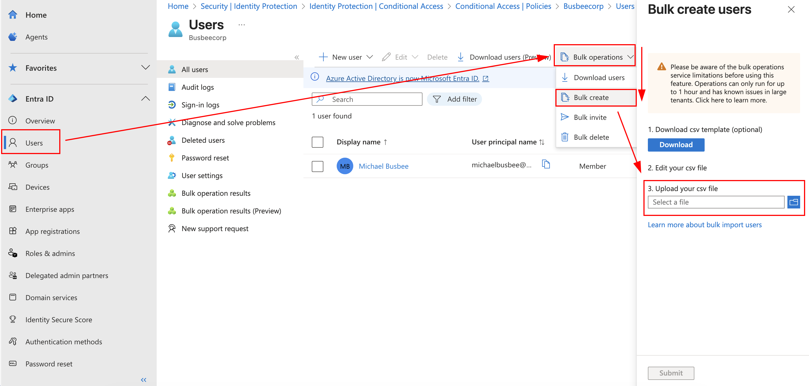
If you need a fresh template for new users you can download one provided by Microsoft here as well.
To see that it worked I refreshed the page and went to the All Users section.
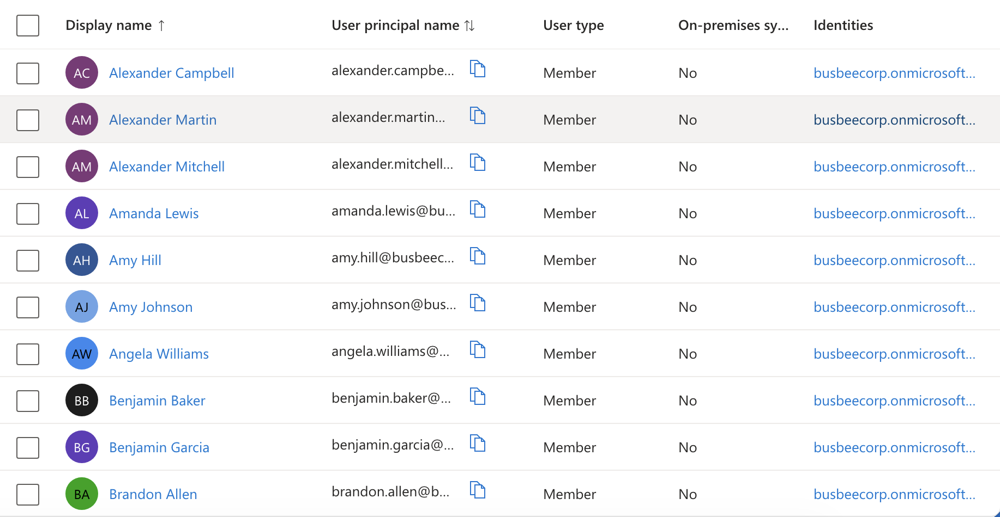
Setting Up Security Groups
With Microsoft Azure you can do most things through the web portal online or using PowerShell. When you want to solve problems at scale or do something in an automated way its sometimes better to use PowerShell. I wanted a way to automate the group creation in this way so I tried with a PowerShell command.
First make sure you have Microsoft Graph installed.
Install-Module Microsoft.Graph -Scope CurrentUser
Then connect to your tenant:
Connect-MgGraph -Scopes "Group.ReadWrite.All" -TenantID "<Your Tenant ID>"
The Tenant ID can be found by going to Entra > Overview

After running this command for the first time like I was, you may have a pop-up browser window asking for permission to connect. Make sure to give it the access so you can continue running commands.
To test that the connection works run
Get-MgContext
It should output some info about your Tenant like below. If this doesn't work you will need to check your connect command again and ensure you are using the right Tenant ID.

Once I confirmed connection I ran the command below which added the following security groups to Entra. Since its a dynamic group, users and devices will be added to them automatically based on their properties.
- Exec
- HR
- Finance
- IT
- Sales
- Marketing
- Eng
- Support
- All-Devices
- All-iOS
- All-Android
# Map each DisplayName to its dynamic rule
$dynamicMap = @{
'Executive' = '(user.jobTitle -contains "Chief")'
'Human Resources' = '(user.department -eq "Human Resources")'
'Finance' = '(user.department -eq "Finance")'
'IT' = '(user.department -eq "IT")'
'Security' = '(user.department -eq "Security")'
'Research' = '(user.department -eq "Research")'
'Sales' = '(user.department -eq "Sales")'
'Marketing'= '(user.department -eq "Marketing")'
'Engineering' = '(user.department -eq "Engineering")'
'Support' = '(user.department -eq "Support")'
'All-Devices' = '(device.deviceId -ne null)' # dynamic **device** group
'All-iOS' = '(device.deviceOSType -contains "iOS")'
'All-Android' = '(device.deviceOSType -contains "Android")'
}
foreach ($kv in $dynamicMap.GetEnumerator()) {
$name = $kv.Key
$rule = $kv.Value
$params = @{
DisplayName = $name
MailNickname = ($name -replace '\s','')
Description = "$name dynamic security group"
SecurityEnabled = $true # keeps it a security group
MailEnabled = $false
GroupTypes = @('DynamicMembership')
MembershipRule = $rule
MembershipRuleProcessingState = 'On'
}
New-MgGroup @params
}

Once I saw the success screen come through I went to Entra > Groups > All Groups and found the groups added via PowerShell.

According to Microsoft, it can take up to 24 hours for these groups to apply to users. While I waited for this to end I moved on to setting up a dynamic device group for Windows 11 devices.
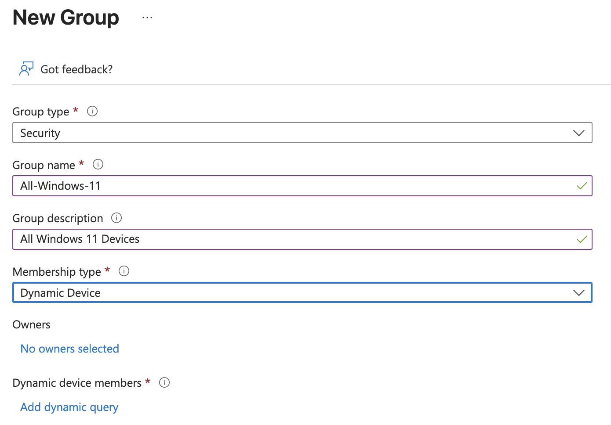
In the Add dynamic query page I added the following settings:
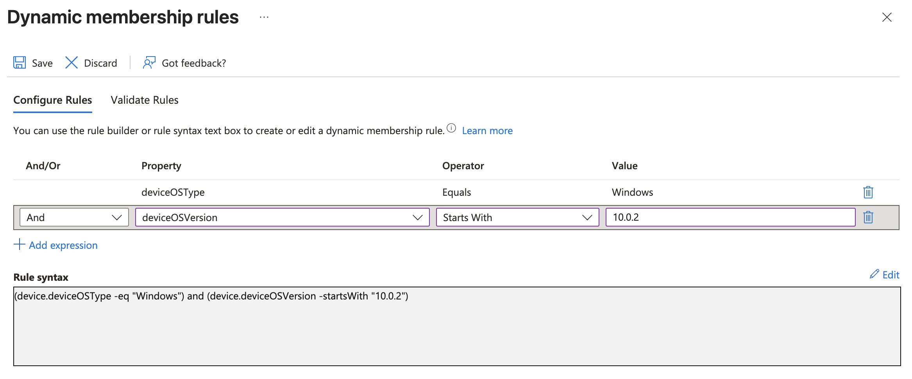
Assigning Entra+Intune Licenses
I discovered in order to get the Automatic Enrollment to work on Intune during the OOBE setup I needed each user to have an Entra and Intune license assigned. Since I had only signed up for the Intune Trial so far, I had to go back and make sure to sign up for an Entra ID Free Trial as well under the same Microsoft account.
The Free Trials for Entra and Intune both came with 25 users each so I decided to cull my workforce down to 25 users (including myself), then apply the licenses to each user. I did not want to apply to all users, just those that are employees of the company. The smartest way to do this seemed to be by creating a dynamic group based on the user's Company Name property and assign licenses to members of that group.
First I needed to set the Company Name property correctly for all 25 of my current users, since I know these are all employees. The following PowerShell commands set the Company Name for all users.
$CompanyName = "BusbeeCorp"
$domain = "@busbeecorp.onmicrosoft.com"
Get-MgUser `
-Filter "endswith(userPrincipalName,'$domain')" `
-ConsistencyLevel eventual `
-All |
ForEach-Object {
Update-MgUser -UserId $_.Id -CompanyName $CompanyName
}
In the real world I would want to make sure data entry for each new user is happening correctly.
With the Company Name set I just needed to create a dynamic group for All-Employees based on the Company Name property BusbeeCorp
$rule = 'user.companyName -eq "BusbeeCorp"'
New-MgGroup -DisplayName "All-Employees" `
-Description "Every Employee of BusbeeCorp" `
-MailEnabled:$false `
-SecurityEnabled:$true `
-MailNickname "all-employees" `
-GroupTypes "DynamicMembership" `
-MembershipRule $rule `
-MembershipRuleProcessingState "On"
I found that to get the Licenses assigned to the All-Employees group I had to first update Microsoft Graph to get a few modules not included by default.The following command will install this and open a new PowerShell session.
Register-PSRepository -Name PSGallery -SourceLocation "https://www.powershellgallery.com/api/v2" -InstallationPolicy Trusted -ErrorAction SilentlyContinue
Install-Module Microsoft.Graph -Scope CurrentUser -Force
pwsh
Once in the new session I ran the commands below to apply the License SKUs to the All-Employees group.
Connect-MgGraph -Scopes "Directory.ReadWrite.All","LicenseAssignment.ReadWrite.All","Group.ReadWrite.All"
$skuIntune = "061f9ace-7d42-4136-88ac-31dc755f143f"
$skuEntraP2 = "f9602137-2203-447b-9fff-41b36e08ce5d"
$groupId = (Get-MgGroup -Filter "displayName eq 'All-Employees'").Id
Set-MgGroupLicense -GroupId $groupId `
-AddLicenses @(@{SkuId=$skuIntune}, @{SkuId=$skuEntraP2}) `
-RemoveLicenses @()
I confirmed this took effect by going to Entra > Billing > Licenses > All Products and saw 25 Assigned licenses for each product.

Signing Up for Defender for Endpoint
First, Go to the sign up page for Microsoft Defender for Endpoint P2 Free Trial and sign up using the same login you used for the rest of the lab. Complete the sign up flow, then go to Microsoft 365 Admin Center > Billing > Licenses page and click Microsoft Defender for Endpoint P2. In this page click Groups > Assign Licenses and assign them to the All-Employees group.
Next we can setup Defender for Endpoint to connect with each of our devices in Intune so we can get visibility over the devices security and compliance status. Defender for Endpoint provides comprehensive protection for endpoint devices to guard users and provide better management capabilities for IT admins.
To configure Defender for Endpoint you must first connect it to the Intune environment. In Intune go to Intune > Endpoint security > Microsoft Defender for Endpoint and set the following setting:
- Allow Microsoft Defender for Endpoint to enforce Endpoint Security Configurations: On
This will let Defender control the configurations within the Intune environment.
You will next need to go to the Defender portal and connect Defender to Intune on the other side. Go to Defender > Settings > Endpoint > Advanced Features > Microsoft Intune Connection and set it to On.
On the Intune side you will need to go to Intune > Tenant Administration > Connectors and tokens > Microsoft Defender for Endpoint and make sure all devices are set to connect to MDE.
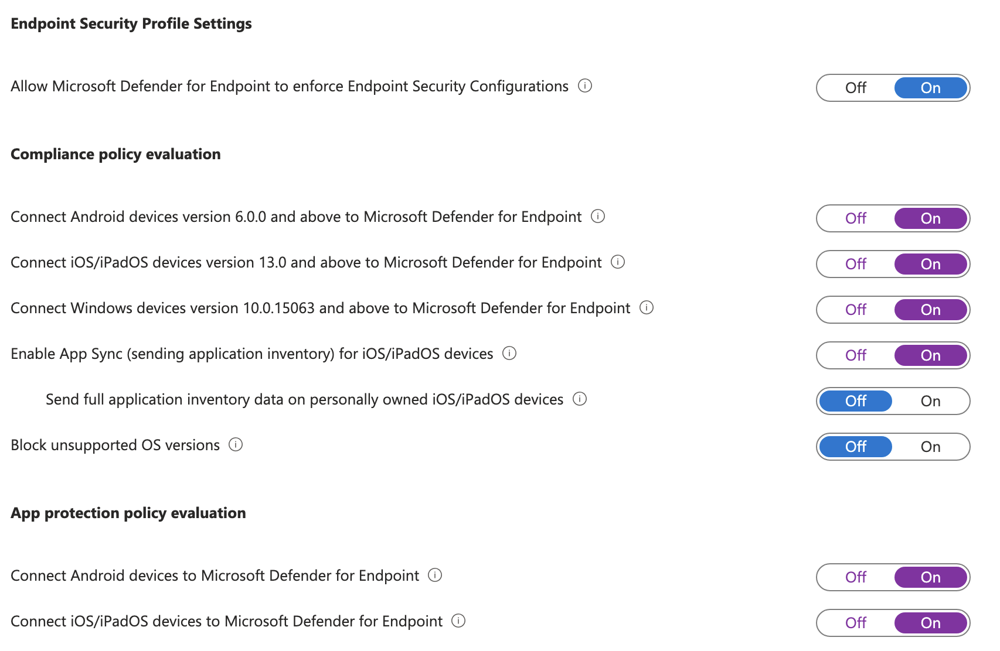
These being connected ensures Defender for Endpoint is able to connect to the Intune devices.
Next: [[2. Enrolling Devices]]
Previous: [[1. Setting Up The Lab]]
Getting the Hardware Hash
In a real world scenario hardware hashes for each device would be provided to the organization by the device manufacturer, but since I can't do that I had to fake it a bit.
I created a new Windows 11 VM and when it got to the select region screen I pressed Shift+F10 to open command prompt then ran the command powershell to get to open a new PowerShell session.
The commands below do the following things:
- Installs Microsoft Graph
- Connects to Microsoft Graph using the TenantID provided
- Sets Execution Policy to Bypass
- Installs Windows Autopilot Info module
- Generates the device hardware hash and uploads it to the tenant
Set-ExecutionPolicy -Scope Process Bypass -Force
Install-Module Microsoft.Graph -Scope CurrentUser
Connect-MgGraph -Scopes "Group.ReadWrite.All" -TenantID "<Your Tenant ID>"
Install-Script -Name Get-WindowsAutopilotInfo -Force
Get-WindowsAutopilotInfo -Online

To confirm this was successful you can go to Intune > Devices > Enrollment > Windows Autopilot > Devices

Here I can see my VM running on VMware "hardware". With this in place I'm ready to move on.
Creating Autopilot Device Group
I created a Dynamic Security group called All-Registered-Autopilot that will grab all devices registered to Autopilot. This will be the group I assign the Deployment Profile and Enrollment Status Page to.
Intune > Groups > New Group
- Name: All-Registered-Autopilot
- Description: All Devices registered to Autopilot
- Membership Type: Dynamic Device
Edit Dynamic Query > Configuration Rules
(device.devicePhysicalIds -any (_ -startsWith "[ZTDId]"))
Creating The Deployment Profile
My goal is to get a Windows 11 device to the point it could be purchased from the manufacturer, sent to a new employee, then the employee can use their corporate login credentials to sign in and set up the laptop. The configuration should take care of all setup and installs and leave as little as possible to the user.
I went to Intune > Devices > Enrollment > Windows > Deployment Profiles > Create Profile
I gave the following settings to create the profile:
- Name: Employee New Device
- Description: Windows 11 Employee Config
- Deployment Mode: User-Driven
- Joint to Microsoft Entra ID as: Microsoft Entra Joined
- Apply a device name template: Yes -
%SERIAL%-W - Add Groups: All-Registered-Autopilot
Summary of the Out-of-box experience (OOBE) settings

Creating an Enrollment Status Page (ESP)
Next I needed to create an Enrollment Status Page to prevent the user from affecting the device setup and also provide them visibility into the setup status.
To access the ESP settings I went to Intune > Devices > Enrollment > Windows > Enrollment Status Page > Create
I gave it a name to match the Configuration Profile and set Show app and profile configuration progress to Yes and left all other settings as default on this page. I also assigned it to apply to the All-Windows-11 group.
Summary of ESP Settings below:

The following settings are important here to make sure apps we install during setup finish before the computer is released to the user:
- Block device use until all apps and profiles are installed: Yes
- Block device use until required apps are installed if they are assigned to the user/device: All
Testing Out-of-box experience (OOBE)
With the command prompt still open on the Windows VM, I ran the command below to shutdown the device and set it back to OOBE mode.
%SystemRoot%\System32\Sysprep\Sysprep.exe /oobe /shutdown
Once it turned back on I noticed the setup was different. It was now asking for a Microsoft Work/School account immediately. I chose one of the accounts from my organization at random and used their email address and password to login.
I noticed there were a few things I did not like about the OOBE setup. It asked the user to change their password as soon as they logged in. This may have been due to this being the first time they have ever logged in, or it could be set by Autopilot. I will need to look into this.
I also noticed it pushed the user into setting up a Windows Hello pin and then used that for login. I would instead prefer the user to have to use a domain user and password for login.
Lastly, I noticed it asked if the user wanted Microsoft 365 Copilot added to taskbar. I do not want my users to have this, or the question asking about it so I want to look into how to remove it.
Next: [[3. Polishing OOBE]]
Previous: [[2. Enrolling Devices]]
Removing Windows Hello
When I ran my first OOBE test my user was prompted with the requirement to setup Windows Hello. I want to turn this off entirely so I found going to Intune > Devices > Enrollment > Windows Hello for Business and set Configure Windows Hello for Business to Disabled and clicked Save.
Removing 365 Copilot Pin Prompt
Another thing I noticed on the last OOBE test was a prompt asking the user to pin Microsoft 365 Copilot to their taskbar. I do not want users to have to worry about this so I looked into how to disable it in the portal.
Turns out you can go to Microsoft 365 > Copilot > Settings > User Access and set Pin Microsoft 365 Copilot App to the Windows Taskbar setting to Do Not Pin and click save.
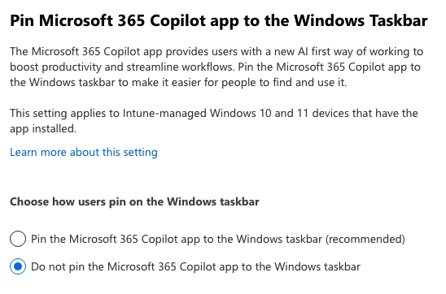
While I was in here I also went through and disabled Copilot across most of the tenant settings.
Testing Setup
Now comes the time to reboot/startup the VM and see if the changes too effect. I started it up and instead of the initial questions where setup asks me to choose a region and language, it instead immediately asked me to sign in with a Microsoft account. Here this should let my user log in with their corporate account that was made for them.

After logging in I got a screen that says "Please wait while we set up your device..."

Once set up completed it logged me into my account and showed me the desktop. I was not prompted with any Windows Hello or 365 Copilot questions.

I checked settings and it shows I'm logged in with my corporate account and the name scheme took effect labeling the device as [Serial Number]-W. It looks like the initial run was successful. Next I want to test installing apps on the device.

Next: [[4. Installing Apps]]
Previous: [[3. Polishing OOBE]]
Installation Methods
I wanted to test a few commonly used apps that also showcase the different methods of installing apps with Intune. I decided on the following:
- Line-of-business (LOB) - Zoom Workplace
- Win32 App - Google Chrome
- Microsoft Store app - GlobalProtect VPN
- Microsoft 365 Apps for Windows 11
I will also need to make sure my [[2. Enrolling Devices#Creating an Enrollment Status Page (ESP)|Enrollment Status Page]] settings block the user from accessing the device until the installations are complete.
Line-of-business (LOB) - Zoom Workplace
To create a LOB app you basically just need to find the .msi version of the app's installer and load it into Intune. Just go to Intune > Apps > All apps > Create > App type > Line-of-business app.

Next it will ask to upload the file you can select it from your computer locally after downloading it from the internet or wherever else.

In my case I went to Zoom's Downloads for IT Admins, selected the Download (ARM64), and downloaded it to my computer. I then went back to Intune and selected this file for the upload.
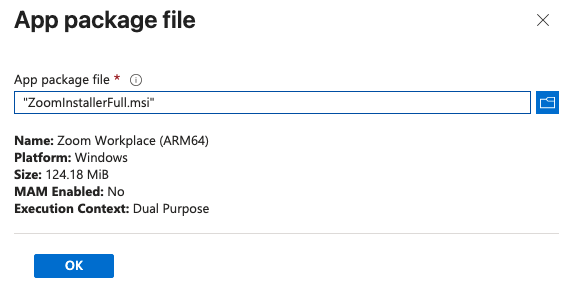
Keep in mind I only chose ARM due to the VM used for testing. In another environment you would want to consider the architecture and OS requirements for your app/device compatibility.
Luckily for me the Intune LOB App Wizard pre-populated a lot of the information to set up the app including the Name and Description. It labeled it as (ARM64) so if I needed to also provision the AMD64 version it would be easy to tell them apart.
For the Command-line arguments section I added the following:
/qn /norestart
This will prevent the device from restarting after the Zoom install is complete.
I also needed to set the App install context to Device so that it automatically installs it during OOBE setup. If you keep it as the default User it will only install it after the user logs in, and it is only available for that user on the machine. I found it made more sense to keep it device-wide.
On the Assignments page I chose the All-Windows-11 group to receive this install. This is where I could consider separating app availability by group membership but for now I will allow it on all Windows 11 devices.

Win32 App - Google Chrome
If the app developer does not provide an MSI version of the installer and you are forced to use an EXE or some form of script, you can wrap it in a Win32 App to make it usable within Intune. This can be done by using Microsoft's Content-Prep-Tool which is a Windows only tool for creating Win32 Apps.
Since I had to use Windows, I downloaded the tool on my Windows machine, calling the file "Win32Prep" and created the following file structure:
C:/
├─ Source/
│ ├─ Chrome/
│ │ ├─ ChromeSetup.exe
├─ Tools/
│ ├─ Win32Prep/
│ │ ├─ IntuneWinAppUtil.exe
├─ Output/
I then used the following command in a Windows machine to turn the Google Chrome:
C:\Tools\Win32Prep\IntuneWinAppUtil.exe `
-c "C:\Source\Chrome" `
-s "ChromeSetup.exe" `
-o "C:\Output"
Once this process completes you should see a ChromeSetup.intunewin file in the Win32Oput folder. Next is uploading this to Intune and creating an App for it.
Back in Intune I went to Intune > Apps > All Apps > Create > App Type > Windows app (Win32) and when it asked for the file I gave it the .intunewin I just made. I gave it the name Google Chrome (ARM64) to be consistent with the Zoom App.
I then entered the following settings:
- Install command:
ChromeSetup.exe /silent /install - Uninstall command:
"%ProgramFiles%\Google\Chrome\Application\chrome.exe" --uninstall --system-level --force-uninstall - Allow available uninstall: No
- Install Behavior: System
- Device restart behavior: No specific action
This will make sure Chrome installs for all users, the users are not allowed to uninstall the app, and the app will not restart the device after installation.
On the Requirements page I selected the following:
- Check operating system architecture: Yes - Install on ARM64 system
- Minimum operating system: Windows 11 21H2
This ensures this app can only install on ARM64 devices with any version of Windows 11. Since this is a fairly small app install I did not make any hardware requirements.
Detection Rule settings:
- Rule type: File
- Path: C:\Program Files\Google\Chrome\
- File or folder: chrome.exe
- Detection Method: File or folder exists
For Assignments I selected this app be required for the All-Windows-11 group to be available for all Windows-11 users.
With all of that in place I hit Create and let Intune build the app for me and everything seemed good to go.
Microsoft Store app - GlobalProtect VPN
To create a Microsoft Store app you just need to go to Intune > Apps > All Apps > Create > App type > Microsoft Store app (new) and searched for "GlobalProtect" in the search bar.
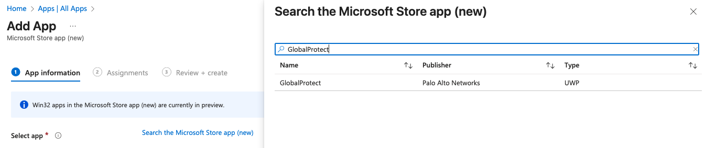
When I selected this it auto-populated most of the information for me in the App Information settings. I did however change the Install behavior to system to ensure this would apply to all users on the device.
On the next page I assigned this to be required for the All-Windows-11 group then hit Create to let Intune build this for me.
Microsoft 365 Apps for Windows 11
Microsoft Office 365 Apps are another install that will often be requested in corporate enterprise environments. Microsoft makes it easy to install this by offering the Office 365 installer as a built in option in the Intune Apps Create menu. Just go to Intune > Apps > All Apps > Create > App Type > Microsoft 365 Apps > Windows 10 and later to start the creation wizard.
For the App Setup Information I kept the defaults, feel free to tweak as needed. On the Configure App Suite page I made the following changes:
- Select Office Apps:
- Excel
- Outlook
- PowerPoint
- Teams
- Word
- Architecture: 64-bit
- Default file format: Office Open XML Format
- Update Channel: Monthly Enterprise
- Remove Other Versions: Yes
- Use shared computer activation: Yes
On the assignments page I set the install to run for all devices in the All-Windows-11 group and clicked Create so Intune could start building the app.
Testing
After all the apps were set up in the portal I restarted my VM OOBE snapshot to start fresh. I let it run for a few minutes and saw the Enrollment Status Page say Installed Apps: 4 out of 4. I was then taken to the device desktop where I confirmed all apps installed.

You can also confirm the apps were installed from the Intune portal by going to Intune > Devices > Windows > [Device Name] > Managed Apps.

Bonus: VMware Tools (Win32 App)
I decided it would be easier on me if I could have my test devices automatically install VMware Tools. Since the installer only comes in the form of an EXE I had to do it as a Win32 App.
First I needed to get the EXE file and create the wrapper file. I found the file setup.exe by finding the ARM version of the windows.iso and mounting it to my system and looking inside. The method of doing this will be different depending on your version of VMware and the OS of your hypervisor host.
Once you have the EXE you can perform a similar step as above with Chrome:
C:\Tools\Win32Prep\IntuneWinAppUtil.exe `
-c "C:\Source\VMwareTools" `
-s "setup.exe" `
-o "C:\Output"
This created a file called setup.intunewin which I could then upload to Intune.
Before I did that I needed to create a new dynamic group that only applies to VMware VMs. I created one in Entra using the following dynamic rule and called it All-VMware
(device.deviceModel -contains "VMware")
or (device.deviceManufacturer -contains "VMware")
For the Win32 App I used the following settings:
- Name: VMwareTools (ARM64)
- Description: VMwareTools (ARM64)
- Publisher: VMware
- Install Command: setup.exe /S /v "/qn REBOOT=R ADDLOCAL=ALL"
- Uninstall Command: setup.exe /S /v "/qn REMOVE=ALL REBOOT=R"
- Allow available uninstall: No
- Install Behavior: System
- Device restart behavior: App install may force a device restart
- Minimum Operation System: Windows 11 21H2
- Detection Rule:
- Rule Type: File
- Path: C:\Program Files\VMware\VMware Tools\
- File or folder: vmtoolsd.exe
- Detection method: File or folder exists
- Associated with a 32-bit app on 64-bit clients: Yes
- Assignment: All-VMware
Next: [[5. Creating Update Rings]]
Previous: [[4. Installing Apps]]
What is an Update Ring?
An Update Ring is a policy setting within Intune that controls how and when the connected devices are able to run Windows updates. You can set different options like number of deferral days, update deadlines, reboot behavior, etc. You can develop different Update Rings and apply each to a different device group in what ever configuration makes the most sense for your environment. Its also important to know that Update Ring only affects Windows OS and Microsoft First Party updates which means custom LOB/Win32 apps will need to be kept up-to-date separately.
Wait, I need another one?
For most organizations it makes sense to make at least two Update Rings, one to pilot more risky changes and updates, and a broader ring that controls updates on all devices. The broad ring is a slower, less update ring that you can trust in production across all devices. You will want to fill the pilot ring with more tech-savvy users and those who are less impactful on production if they shutdown unexpectedly. There is a wide range of issues that can be caused by a bad update, from bad drivers, broken network connections, other bugs etc. Having a pilot group protects the rest of the organization from experiencing these disruptions. I decided for my environment I would make all members of the IT team the pilot group and everyone else is in the broad group.
The Update of The Rings
To create the update rings you need to go to Intune > Devices > Windows > Windows Updates > Update Rings > Create Profile
Pilot Ring
The following settings will create an update ring that allows pilot users to defer feature updates for 7 days but does not let them defer quality updates. It also creates a 7 day deadline with a 2 day grace period. The ring is set to only affect IT users.
- Name: Pilot Update Ring
- Description: Pilot Update Ring
- Quality update deferral period (days): 0
- Feature update deferral period (days): 7
- Automatic update behavior: Auto install & restart at maintenance time
- Use deadline settings: Allow
- Deadline for feature updates: 7
- Deadline for quality updates: 7
- Grace period: 2
- Included Groups: IT
Broad Ring
The following settings will create an update ring for the remaining users in the tenant. They are allowed to defer feature updates for 30 days and quality updates for 7 days. This setup also gives them a 14 day deadline with a 3 day grace period. This will apply to all users that are not in the IT department.
- Name: Broad Update Ring
- Description: Broad Update Ring
- Quality update deferral period (days): 7
- Feature update deferral period (days): 30
- Automatic update behavior: Auto install & restart at maintenance time
- Use deadline settings: Allow
- Deadline for feature updates: 14
- Deadline for quality updates: 14
- Grace period: 3
- Included Groups: All-Employees
- Excluded Groups: IT
When all is said and done you should have something that looks like this.
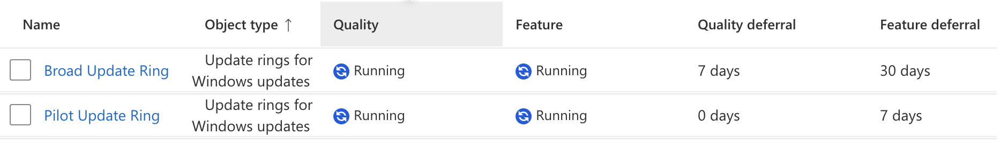

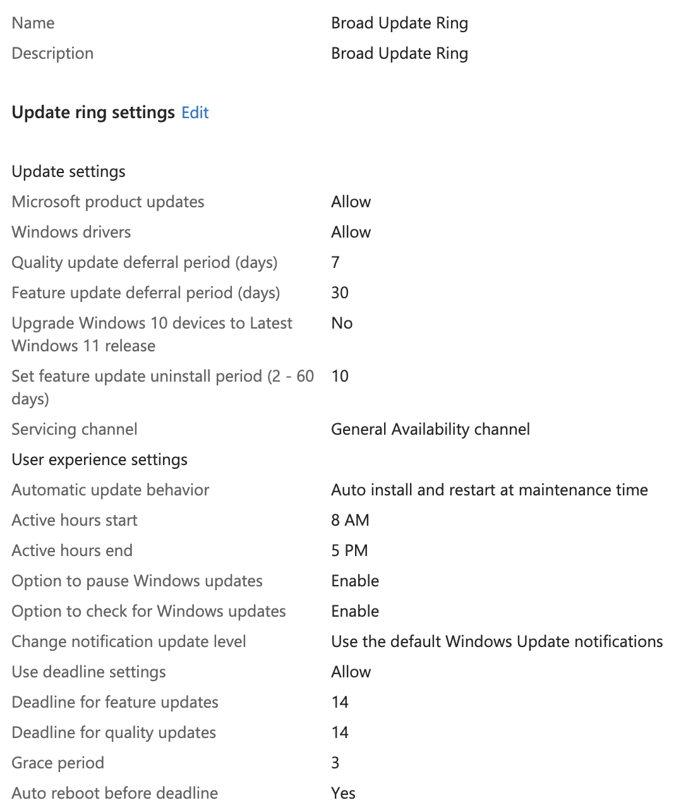
This one is a little tougher to test since we would have to wait for Microsoft to issue a new update for Windows so we could see how it hit user devices differently. For now however, let's just trust that it's working properly.
Next: [[6. Securing Devices]]
Previous: [[5. Creating Update Rings]]
Introduction to Security
One benefit of managing devices with Intune is that it gives you control of security features across the devices it manages and allows IT admins the ability to fine-tune their environments to meet their security and compliance needs. There are several methods available such as security baselines, defender for endpoint, compliance policies, conditional access, etc. that can be used to our benefit.
Every organization will have different concerns when it comes to data governance, risk, compliance, regulation, and other requirements make demands on how things can be structured. Since there is no one-size-fits-all solution to security, this section is meant as more of a walkthrough of options available within Intune rather than a comprehensive list of air-tight security measures. As always with security, consider your own threat model and how it applies to the resources available.
Security Baselines
Conveniently, Microsoft created a way for administrators to change granular security settings that can be saved as templates called Security Baselines.
To access Security Baselines just go to Intune > Endpoint security > Security Baselines > Security Baseline for Windows 10 and later > Create policy. Most of the recommended defaults Microsoft gives us are pretty good so generally it is good enough to keep what is already in there but this would be the place to go for granular changes.
- Name: Windows 11 Baseline
- Description: Windows 11 Baseline
- Configuration Settings: Keep Defaults
- Assignments: All-Employees and All-Windows-11

Once you save this baseline the security settings chosen in Configuration Settings will be enforced on all users and Windows 11 devices. If we wanted to tweak these settings later on we could come back and change the settings or possibly create a new baseline and assign it to a different group of users or devices.
We could also consider, for testing purposes, limiting the rollout of this Security Baseline to our IT pilot users similar to howe we did with the Update Rings. This way we could ensure the baseline works correctly for non-critical users before pushing it out to all users.
Defender for Endpoint
Microsoft Defender for Endpoint can be used as an Endpoint Detection and Response solution within your environment. You can create policies with Intune that onboard MDE to each device so you have visibility into the security of your devices.
Now go to Defender > Settings > Endpoints > Onboarding where you can find the download button for the Onboarding package. Make sure to select "Mobile Device Management / Microsoft Intune" from the Deployment method dropdown first.

Clicking download will get you a file called WindowsDefenderATP.onboarding that can be uploaded into the Intune Portal.
To create a new onboarding policy go to Intune > Endpoint security > Endpoint detection and response > Create policy
On this page Intune will also show you how many devices you currently do not have onboarded.

Now you will need to get the text from within the WindowsDefenderATP.onboarding file which Microsoft calls the Onboarding blob. You can open it in something standard like Notepad or VSCode and paste the entire thing in the field called Onboarding (Device) below. In the Create Profile wizard I added the following settings:
- Platform: Windows
- Profile: Endpoint Detection and Response
- Name: EDR Onboarding
- Description: EDR Onboarding
- Microsoft Defender for Endpoint client configuration package type: Onboarding
- Onboarding (Device): Onboarding blob
- Sample Sharing: All (Default)
- Assignment: All-Windows-11 Include
It took some time for the settings to sync but after a bit I came back and saw I had one onboarded device and two successful device checkins.

This means that Intune is successfully connected to MDE and onboarded to the EDR. Intune is now able to push security profiles to devices it manages as well as pull status reports from them.
Compliance Policies
Compliance policies in Intune can be used as a way to enforce that certain security features are required on devices assigned to the policy. For instance you can require devices use BitLocker and Secure Boot to be marked compliant. Compliance policies can also send emails to the user that has a device marked non-compliant.
Before we create a policy, let's create a template we can use later for the email we will send to users. To create a new template go to Intune > Devices > Compliance > Notifications > Create Notification. Below are the settings I used:
Name: Non-Compliance Email Show company logo: Enable Show company name: Enable Locale: English (United States) Subject: Device is Noncompliant Message:
Hello,
Your device has been marked noncompliant. Please call the IT department at 555-555-5555 to resolve this issue.
Set to default locale: Toggled On

Now that we have an email template to send to users we can create the Compliance Policy by going to Intune > Devices > Compliance > Create Policy and entering the following policy settings:
Platform: Windows 10 and later Profile type: Windows 10/11 compliance policy Name: Win Compliant – BitLocker + Secure Boot + MDE Healthy Description: Marks Windows devices compliant only if disk encryption, secure-boot & Defender for Endpoint health are all good.
On the next page you can choose security settings to be required for compliance at the granular level. Microsoft separates them into categories so you will need to browse through the options.
Under the Device Health header you can find settings to require BitLocker and Secure Boot
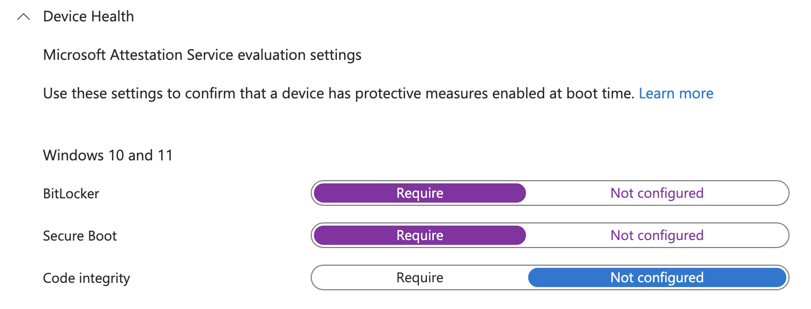
Under the Microsoft Defender for Endpoint section you can find the option that requires devices report all clear on their machine risk score to be considered compliant.

Under the Actions for noncompliance page the policy will automatically set a rule to immediately mark the device as noncompliant but that can be delayed by a number of days. On the line underneath choose send email to end user with 0 days scheduled which will cause the email to send immediately. On the Choose template field, select the Non-Compliance Email template we created earlier.

There is also an option to select additional recipients of the email. We could choose to send this to a specific group of users such as the IT team. For now I will leave this blank.
I will assign this policy to the All-Windows-11 group and finish creating the policy. Now if you refresh the page on Compliance Policies it will warn you that we are not using Conditional Access to enforce the policy.
This means we will need to move on to the next section where we will create a Conditional Access policy in Entra and connect it to the compliance policy.
Conditional Access Policy
Conditional Access Policies can be set in Entra and be used for enforcing the Compliance Policy we created in the previous step. To create the policy go to Entra > Conditional Access > Create new policy and fill out the fields like below:
- Name: M365 – Require compliant device
- Users: Include > Select users and groups > Users and groups > All-Employees group
- Target Resources:
- Select what this policy applies to: Resources (formerly cloud apps)
- Include > Select resources > Select > Office365
- Network: No but here is where we could block based on network connection details
- Grant: Grant access > Require device to be marked as compliant
- Enable Policy: Report-only (test first before locking yourself out).
Click create to finish out the policy wizard.

Report-only will just create logs but not actually lock you out so you can test for a few times. You can verify the sign-in logs by going to Entra > Monitoring & health > Sign-in logs and take a look at your logs while this policy is in Report-only mode.

Since my sign-ins though the online portal are showing as a Success it looks like its okay to turn the policy on for real. Your mileage may vary. This is why testing is important.
Next up we want to create another policy to block legacy authentication. Go to Entra > Conditional Access > Create new policy and enter the following details:
Name: Block legacy authentication – All users Assignments: All Users Conditions: Client Apps > Yes > Other clients Grant: Block access Enable: Report-only to test then On
In my Intune Devices list I can confirm one of my devices is non-compliant. It is currently not using BitLocker or Secure Boot.

Since these two failure points are things we would want to have setup before we ever ship devices to users I won't worry about fixing this now. It does at least show as a proof-of-concept that we can build compliance policies in Intune and use Entra to apply them with conditional access policies.
Next: [[7. Enrolling iPhones]]
Previous: [[6. Securing Devices]]
Benefits of Managed iPhones
Intune allows you to enroll and manage other devices beyond just Windows 11. With some additional setup, you can connect Apple iPhone and Google Android devices. In this section I will show how to install an Apple Push Certificate so their servers are able to connect with Intune.
When iPhones get enrolled through the Intune Company Portal, IT teams gain visibility into the device setting such as hardware, OS version, jailbreak status, and compliance status. Intune also can control settings on the device like passcode, Wi-Fi, certificate requirements as well as OS update deferral capability. Intune also has the ability to protect apps on the device with a MAM policy to prevent actions such as copy/paste from a managed app to an unmanaged one. Intune can also take action in the event the device is lost or stolen: full/selective wipe, lost-mode, lock-screen PIN reset, etc.
Apple MDM Push Certificate
An Apple MDM Push Certificate is required to create a handshake between Intune and Apple's Push Notification (APN) service. It its what builds the trust relationship between the individual device and the Intune server. Every MDM command we order through Intune must pass through APN to reach the devices.
To sign up for a new Push Certificate you will need to have an apple account. If you want to create a new account you can do so at appleid.apple.com
First you will need to go to Intune and download the Certificate Signing Request (CSR). This contains Intune's public key that will need to be signed by Apple. It can be found by going to Intune > Devices > Enrollment > Apple > Apple MDM Push Certificate.
In the Apple MDM Push Certificate section you will need to first check the box granting Microsoft permission to send info back and forth with Apple. Next you will need to download the IntuneCSR.csr file by clicking "Download your CSR". Once downloaded, click the link for "Create your MDM push Certificate" which will take you to Apple's page asking you to log in with your Apple ID.
Here you will need to log in with the Apple ID you intend to use with Intune.

Logging in will take you to Apple Push Certificate Portal. You will just need to click the Create a Certificate button to get started.
Agree to the Terms and Conditions, then upload the CSR file we downloaded from Intune. You can leave a note for the certificate such as "Intune Lab Connector".

Once you click Upload you will be taken to the next page where your Push Certificate gets generated and you can download a copy.

Clicking download will provide a file called MDM_ Microsoft Corporation_Certificate.pem that we can take back to Intune. Clicking Manage Certificates takes you to a page where you can see all 3rd Party server certificates issued by this Apple account. You have the ability to revoke, renew, or download the certificate we just made.
It's worth noting that the APN Certificate we created has an expiration set for 1 year from its issue date. This should be plenty of time for our lab setup but depending on your use-case you may want to consider renewing or replacing the certificate after one year.
Now that we have the .pem file we can upload it back into Intune which will complete our trust connection between the two environments. Back on the Configure MDM Push Certificate blade where we were setting things up enter the Apple ID we used to create the certificate on step 4 and upload the .pem file on step 5.
Once finished you should immediately see a successful connection on the Apple MDM Push Certificate Page.

Company Portal App
The Company Portal app is one way to enroll devices on iPhone into the Intune. Users will need to download an app called Intune Company Portal from the Apple App Store and sign in using their organization login. Since this enrollment method requires user's devices to already be setup to access the App Store, Company Portal is better as an option for BYOD devices or those that require fewer restrictions.
Another enrollment method would be to use Automated Device Enrollment to create an Out-of-the-box experience that automatically sets up the iPhone during first power on. Unfortunately, this method requires access to Apple Business Manager which can only be obtained by having a business account with Apple. This will be out of reach for many aspiring lab builders so I will leave it out of the scope of this guide.
To setup the Company Portal go to Intune > Apps > iOS/iPadOS apps > Create > iOS Store app. In the create wizard you will need to select "Search the App Store" in the first step when selecting the app and search "Intune Company Portal".
For App Information I will keep the defaults the app provides. On the Assignments page I will apply this app to members of the All-Employees group under the "Available for enrolled devices" section.
Testing Enrollment
It seems the only way to test an iPhone enrollment is to grab a device and download the Company Portal app. I tried running an iPhone simulator through Xcode but it does not allow app installs from the app store. Instead, enjoy these photos from my phone:

First go to the App Store and search for and download the Intune Company Portal app. When you open the app it will ask you to sign in. Use the organization account of one of the users in Entra. Once signed in you will see a series of steps to complete to enroll your device.

The first page will outline what information Intune can and can't see on your personal device. This will be important to users of the organization who may worry about what data they are sharing to the organization from their personal devices.

The next page will ask you to allow download the configuration profile required by Intune to be on the device. If your device is configured like mine is, this is the part that will trigger a 1 hour security delay on your iPhone that will require you to wait until resuming the setup process.
Once the profile is downloaded you can go to Settings app > General > VPN & Device Management and click Management Profile from the Downloaded Profile section. On the next page click Install in the top right corner, read the warning, then Install again in the top right corner.
Once the profile is installed you will see a success screen and back on the VPN & Device Management screen you will see this profile as an entry with the option to remove it from the device.

The Intune Company Portal now allows users to download apps from the company to their phone as well as view devices they are connected to. Apps provided here by the company can be configured to have increased protection through Intune MAM policies.
Next: [[8. Enrolling Androids]]
Previous: [[7. Enrolling iPhones]]
Benefits of Managed Androids
Intune allows you to enroll and manage other devices beyond just Windows 11. With some additional setup, you can connect Apple iPhone and Google Android devices. In this section I will show how to connect a Managed Google Play account to Intune.
Managed Google Play
To make the connection just go to Intune > Devices > Enrollment > Android > Managed Google Play which will open a blade allowing you to give permission to Intune to connect to Google Play then a button to log in with a Google account.

In a real scenario you would want to use a secure Google account managed by the organization but for the purposes of this lab I think it will be fine to just use a personal account. It will warn you that using a personal account limits you to Android only but this is fine since we don't plan on doing anything with Chromebooks or Google Workspace in this lab.
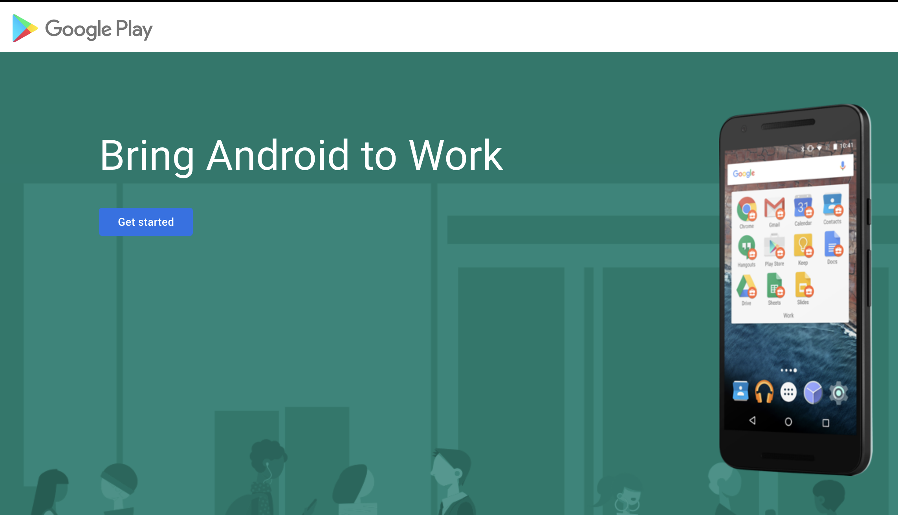
After logging in you should see a splash screen. Click the Get started button. Next it will ask for your Company name, here you can just put the name of your fake organization as well as your contact info when it asks for company officers.

If everything worked correctly you should be able to go back to the Managed Google Play screen and see a successful Setup Status.

Testing Enrollment
To test enrollment I grabbed a virtual android install from the Android Studio and once it finished setting up I went to the Google Play Store and downloaded the Intune Company Portal app.

When the app finishes downloading, open it and sign in with an organization account. It will then give you a rundown of what goes into enrolling the device with Intune.
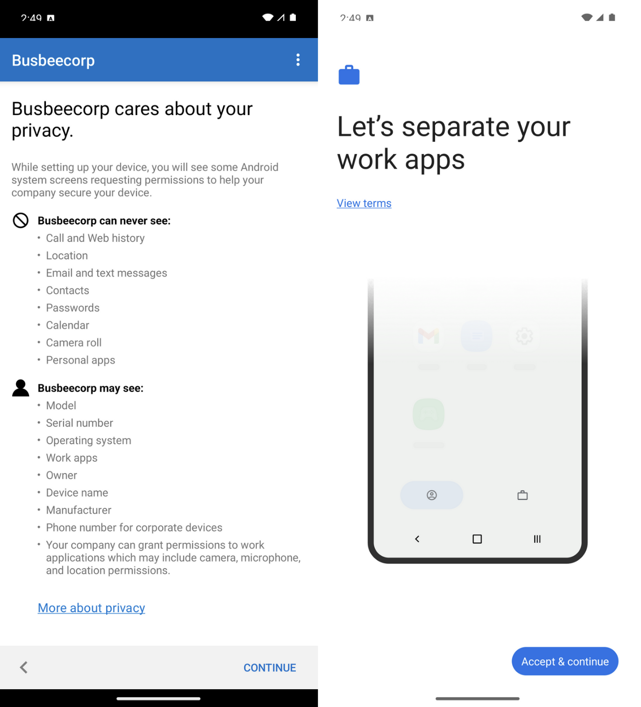
When you click begin it will give you an outline of what the organization is and is not able to see through this Intune Company Portal connection. Click Accept & Continue.

Once you move on from this page you will be shown another screen explaining that your work and personal apps will now be separated. Apps for work will now come with a briefcase icon in the bottom right corner to differentiate themselves. In the app drawer you will now see two separate folders to separate Personal and Work apps. You can click the Google Play for Work icon to see apps provided by the organization available for download.
Next: [[9. Monitoring and Reporting]]
Previous: [[8. Enrolling Androids]]
What can I monitor?
Intune provides several ways to monitor devices it manages. You can make configuration and compliance reports, you can view deployment history or endpoint antivirus reports, or even drill down into a specific device for more information. When in doubt, poke around and take a look at anything that says monitoring and reporting.
Compliance Reports
Go to Intune > Reports > Device compliance to view a summary of device compliance information. If nothing shows here you may need to click the "Generate" button to refresh the data on the page.

Here you will be able to see a breakdown of devices that are compliant vs not. You can also go deeper and get Intune to generate more specific reports such as a Noncompliant devices and settings report.

The full list of built-in reports related to compliance can be found in the reports tab Intune > Reports > Device compliance > Reports
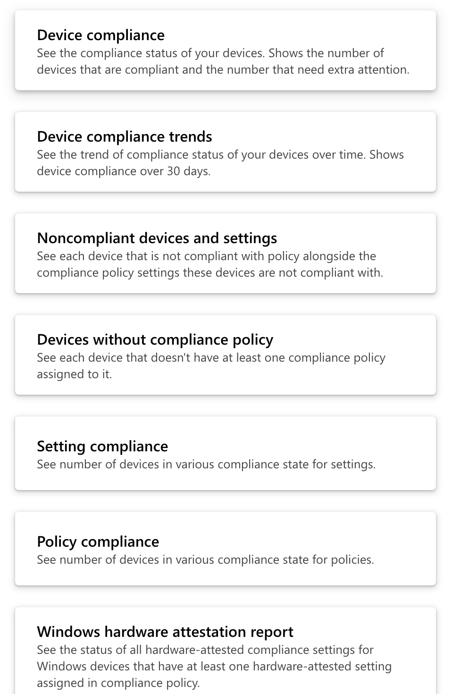
Options include:
- Device Compliance
- Device Compliance trends
- Noncompliant devices and settings
- Devices without compliance policy
- Settings compliance
- Policy compliance
- Windows hardware attestation report
Configuration Reports
On the Intune > Reports > Device configuration screen you can see a summary of configuration policies and their success/failure device totals.
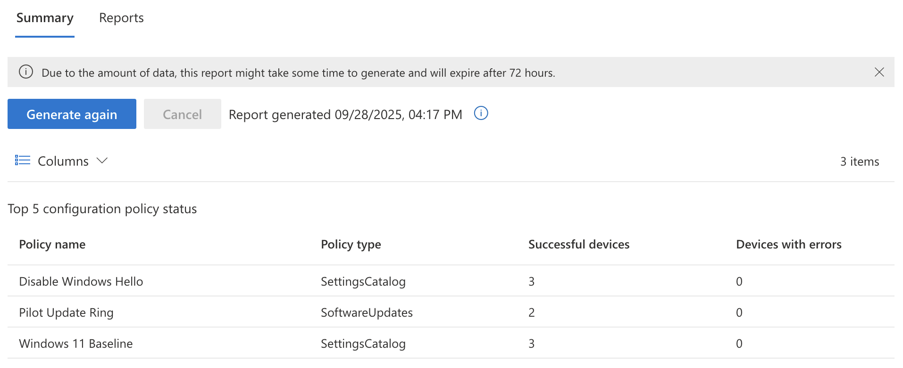
Microsoft Defender Antivirus
On the Intune > Reports > Microsoft Defender Antivirus to see a summary of Antivirus scans on devices managed by Intune. It will give a breakdown of number of devices by status such as clean, pending, critical etc.

In the Reports section of this page you can also get a report of detected malware on endpoints.

Device and App Monitoring
Both Intune > Devices and Intune > Apps have their own page called Monitoring that has a list of reports specific to their category that can be generated to give teams more insight.
Screenshot of available Device reports:
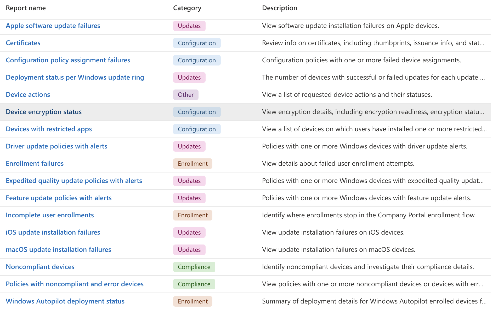
Screenshot of available App reports:

Next: [[10. Project Conclusion]]
Previous: [[9. Monitoring and Reporting]]
Now What?
I have reached the end of things I intended to experiment with in my lab for now, although there are many more stones to turn over that we didn't even get a chance to play with. It sometimes requires a living breathing environment to get a sense of how some of the tools and features work within Intune. I am not too heartbroken I wasn't able to test everything, but I am excited to get the chance to work on an even more complex Microsoft 365 environment.
For the time being, there are a few last minute bits of tidying up to accomplish before I can close out the lab entirely.
Collecting Lab Artifacts
First I want to collect as many bits of my lab as possible to save to the GitHub repository, like users, groups, and policies that can all be exported from the Intune portal. In the event I create a new lab down the road these pieces may save me time getting back up to where I was before.
Install-Module Microsoft.Graph -Scope CurrentUser -Force
Connect-MgGraph -Scopes "Group.ReadWrite.All" -TenantID "<TenantID>"
Install-Module IntuneBackupAndRestore -Scope CurrentUser -Force
Import-Module IntuneBackupAndRestore
Connect-MgGraph -Scopes `
"DeviceManagementConfiguration.Read.All", `
"Device.Read.All", `
"DeviceManagementApps.Read.All", `
"DeviceManagementManagedDevices.PrivilegedOperations.All"
cd ~/Desktop
Start-IntuneBackup -Path ./IntuneBackup
Running the PowerShell commands above prompted me to sign in with my Microsoft account, then connected me to Intune and downloaded my Intune configurations into a folder on my Desktop called IntuneBackup.

Inside the folder there were several subfolders that contain apps for devices, policies, profiles, scripts and settings. This folder should be all we need to import into a new Intune environment to get us back to where we were before. Now I just need to do another one of these for Entra.
Install-Module EntraExporter -Scope CurrentUser -Force
Import-Module EntraExporter
Connect-EntraExporter
Export-Entra -Path ~\Desktop\EntraBackup -All
The above PowerShell commands will create a folder on the Desktop called EntraBackup. Sign into Microsoft when the pop-up requires it.
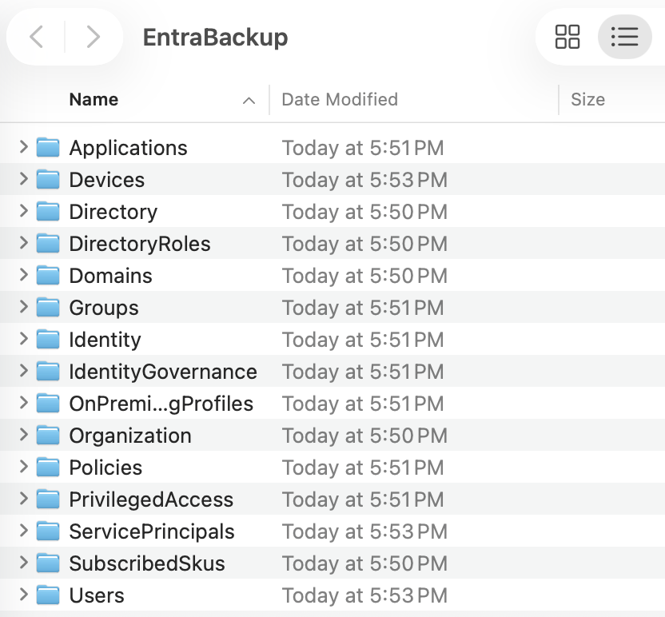
The image above shows all the items that Entra exported for us.
I considered whether to put all of this data in GitHub. Considering all of my environment data is synthesized except for my own personal user in the tenant I just deleted that user out and decided it was safe enough.
In the real world having your users personal info in JSON files publicly hosted on the internet would be a bad idea. It is also a bad idea to share to the world all of your compliance and conditional access policies because a threat actor could use it to build a plan to get around your security.
Ending The Free Trial
One last thing I wanted to do with my project is end the free trial to make sure I don't get charged unexpectedly when the 30 day period ends. You can go to Microsoft 365 Admin > Billing > Your products and see a full list of every product connected to the account. You can go through them all and hit Cancel Subscription.

I found that the default setting was for recurring billing to be turned off and to expire the trial at the end of the period which was kind of them. If you wanted to take it a step further you could also delete the tenant and Microsoft account for the trial. For now I'll leave that up in case I realize I need anything. With this now done I can consider this lab complete.
End of the Road
Now that I have finished I think its a good idea to reflect on what we learned in this lab. We got to see how to upload a user database into Entra and assign them to dynamic groups based on their departments. We got to see how to assign licenses to users both by PowerShell scripts and through the portal. We got to learn how to get the hardware hashes of devices and upload them to Intune, as well as creating deployment and enrollment configurations to manage the out-of-the-box experience for users. We learned how to install apps, configure update rings, push security settings to devices as well as enrolling smartphones Lastly we learned how to secure and monitor our environment to ensure smooth operation. There are countless things in the Microsoft 365/Azure environment to learn but I think we did well getting this far.
About The SOC101-Lab Project
Project Outline
- Set up the VMs
- Windows
- Zeek
- Sign up for Splunk/Elastic
- Get Free Trial
- Forward VM data to SIEM
- Install Atomic Red Team on VMs
- Run Atomic Red Team test on VMs
- Find a few interesting tactics
- Run on target machine
- Search for IOCs in SIEM log data
- Phishing Lab
- PCAP Analysis
- Malware Analysis
- Endpoint Security
Table of Contents
-
[[1. Hypervisor & Network]]
-
[[2. Windows Environment]]
-
[[3. Security Onion]]
-
[[4. Splunk]]
-
[[5. Forwarders]]
Next: [[1. Hypervisor & Network]]
Previous: [[SOC101-Lab/0. Project Introduction|0. Project Introduction]]
Proxmox
Proxmox is a free and open source type 1 hypervisor that is popular with home lab builders. It is a Debian Linux based OS that can be installed on almost anything, although your mileage may vary depending on the strength of the hardware you give it. In my case I will be installing on my desktop PC that I was previously using for gaming.
I won't go into the specifics of how to install Proxmox, but you basically just download and install the Proxmox ISO to a flash drive and plug it into your computer. If you don't know what you're doing here just look up a video.
Updating Proxmox
First make sure Proxmox is up to date. Open a new shell console by clicking on your PVE Node and selecting Shell. You will likely need to disable the subscription update sources and create a source list for no-subscription updates. This can be done with the commands below:
sed -i '1s/^/Enabled: no\n/' /etc/apt/sources.list.d/pve-enterprise.sources
sed -i '1s/^/Enabled: no\n/' /etc/apt/sources.list.d/ceph.sources # if you’re not using Ceph
cat > /etc/apt/sources.list.d/proxmox.sources <<'EOF'
Types: deb
URIs: http://download.proxmox.com/debian/pve
Suites: trixie
Components: pve-no-subscription
Signed-By: /usr/share/keyrings/proxmox-archive-keyring.gpg
EOF
Now you can update and reboot Proxmox with the following commands:
apt update && apt full-upgrade -y
reboot
Tweaking Network Settings
Now that Proxmox is updated we need to make a lab sub network that is isolated from the main home network that Proxmox sits on. Click Datacenter > [Node] > Network to get network settings for the current Proxmox node. We will want to make sure we have two bridges, vmbr0 and vmbr1 which will be the bridge to our outside and inside networks respectively.

Note: I have chosen to call my node "tower"
First we want to make sure vmbr0 exists and is set to VLAN aware: Yes. To make changes to the bridge just double click it, then check the box for VLAN aware.
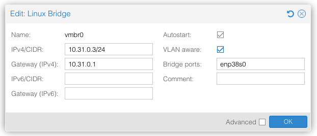
Next we will need to create the a new bridge for vmbr1. For this one, we will want to use an Open vSwitch bridge instead of the default Linux Bridge because this interface will be getting mirrored to another interface vmbr2 later on in the Security Onion section.
First go to Datacenter > [Node] > Shell and run the following commands to install Open vSwitch:
apt update
apt install openvswitch-switch
Now just click Datacenter > [Node] > Network > Create > OVS Bridge to open up the create wizard. The name should autofill to vmbr1 but you will also need to make sure to click the VLAN Aware checkbox in this one as well. All other fields can be left blank. Once that is done save the settings by clicking Apply Configuration on the top of the Network config page.
pfSense
pfSense is a free and open-sourced software that can operate as a router and firewall once installed on hardware. For our purposes, we can use it to create a walled-off network environment for the security lab. All of our devices will be connected to the PFSense router and PFSense will decide what connections are allowed.
Downloading ISO
To download the PFSense ISO to Proxmox via the console run the following commands:
mkdir -p /var/lib/vz/template/iso
cd /var/lib/vz/template/iso
wget https://kr2.mirrors.naho.moe/naho/pfSense/2.7.2/pfSense-CE-2.7.2-RELEASE-amd64.iso.gz
gunzip pfSense-CE-2.7.2-RELEASE-amd64.iso.gzls
Once that is downloaded and unzipped you can go to Datacenter > [Node] > local ([Node]) > ISO Images where you can verify the ISO is recognized by Proxmox.
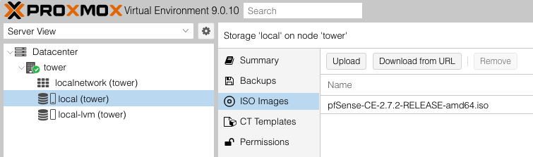
Now this ISO can be used to create a new pfSense VM.
Create VM
To get started creating the pfSense VM you just have to click the Create VM button in the top right of the Proxmox portal.

This will open a pop-up Create: Virtual Machine wizard you can use to tweak the details of the VM before installing it. I will use the following settings to create one for pfSense:
- General Page
- VM ID: 900
- Name: pfSense
- OS Page
- ISO: Select the ISO disk from previous step
- System Page
- Machine: Default (i440fx)
- BIOS: Default (SeaBIOS)
- SCSI Controller: VirtIO SCSI single
- Disks Page
- Size: 20GB
- Cache: Write back
- CPU Page
- Cores: 2
- Type: host
- Memory Page
- Memory (MiB): 2048
- Network Page
- Bridge: vmbr0
- Model: VirtIO (paravirtualized)
- Firewall: Checked
Before starting up the pfSense VM we need to add another network interface so the router has a WAN and LAN port. Go to Datacenter > [Node] > pfSense > Hardware > Add > Network Device and give it the following settings:
- Bridge: vmbr1
- Model: VirtIO (paravirtualized)
- Firewall: Checked
Installing and Configuring
Now you can start the pfSense VM by going to Datacenter > [Node] > pfSense > Console and clicking the Start Now button, or by clicking the Start button in the top right corner of Proxmox when pfSense is selected.

You will get to an installer that will guide you through the pfSense VM install.
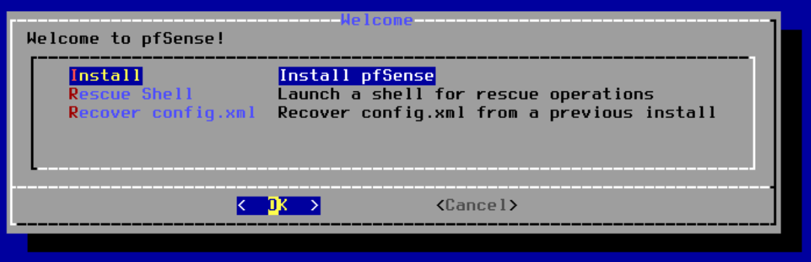
When prompted for partitioning select Auto (UFS) > Entire Disk > MBR > Finish > Commit to allow the installer to build the file system and boot manager. Once it gets to the end it will ask to reboot. Confirm the request and wait for the VM to come back online.
After booting up, pfSense will ask a few questions:
- Should VLANs be set up now? -> n
- Enter the WAN interface name -> vtnet0
- Enter the LAN interface name -> vtnet1
pfSense will spin up and begin configuring itself. Once its done you will see a CLI menu of options. Select 2) Set interface(s) IP address so we can update the interfaces.
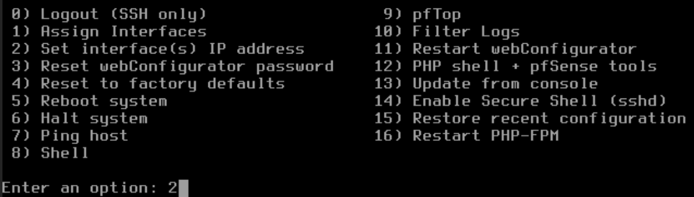
Make the following changes within this menu:
- WAN
- IPv4: DHCP
- IPv6: DHCP
- Revert to HTTP as webConfigurator: n
- LAN
- IPv4: Static
- IPv4 Address: 172.16.0.1/24
- Enable DHCP on LAN: y
- Start Address: 172.16.0.100
- End Address: 172.16.0.200
- Revert to HTTP as webConfigurator: n
Once this is done you will be brought back to the pfSense console menu. You can test the connection on the WAN side by choosing option 8 to open a shell interface and running ping -c 3 8.8.8.8 to ensure you are able to send and receive packets. If it fails here something did not set up correctly in the previous steps.
GUI Setup Wizard
Open the pfSense portal from the WAN side.
pfctl -d
Navigate to the WAN ip address in your browser to find the pfSense login window. Use the default login admin:pfsense to get in. You will get thrown into a setup wizard you will need to complete for pfSense to work correctly. Most settings will be left at default but it will ask you to create a new admin password. Do that, then let it reboot.
After reboot, you will need to run pfctl -d in the shell again before you will be able to access the web portal again.
Now go to Services > DNS Resolver > Access Lists and create a new list for the network 172.16.0.0/24 (Or whatever you made your lab network).
Firewall Rules
Now we need to set some rules on the firewall so that none of the malware we run within the pfSense LAN network can escape out to the outer network. First we will create an alias for the Home network so it is easier to build the rules. Go to Firewall > Aliases > Add and give it a name of HOME_LAN and set it to the IP address of your Home network, which will likely be something like 192.168.0.0/24. Make sure to select Apply Changes when done to save the settings.
Next go to Firewall > Rules > LAN and delete all rules except for the Anti-lockout Rule. Then create two new rules based on the following table:
| Order | Action | Protocol | Source | Destination | Notes |
|---|---|---|---|---|---|
| 1 | Pass | Any | LAN subnets | !HOME_LAN | Allows traffic not destined for home network |
| 2 | Block | Any | LAN subnets | HOME_LAN | Blocks anything heading towards home network. |
Note: The
!in Rule #1 is achieved by checking the box for "invert match". Also make sure the Pass rule is above the Block rule or traffic will fail to travel.
Tailscale
Now that I have pfSense up and running, any new VM I create for the lab will connect to the pfSense LAN interface rather than the Proxmox interface. This way, all lab devices are contained within their own network and segregated from the main home network it sits within. However, once the network is walled off we will need a way to connect to it.
My plan is to create a small Tailscale VM, set it to advertise the pfSense LAN network, then set ACL rules to keep it separated from my Home Network.
My setup will have two Tailscale VMs, one on the home network advertising the home subnet, and another on the lab network advertising the lab subnet. This way I can remotely connect to both networks without them bleeding into each other. My instructions will assume you want to set it up this way and have the home Tailscale VM already setup. You can repeat the instructions here to setup both.
Create The VM
This time I will use a container instead of a VM due to being a little more lightweight. Proxmox makes it easy by having container templates available for download and use. To download a new container template go to Datacenter > [Node] > local ([Node]) > CT Templates > Templates. This will popup a window where you can select debian-12-standard from the list and click Download to get the template.
Now create the new container by clicking Create CT in the top right of Proxmox. I used the following settings in the wizard to create the container:
- CT ID: 901
- Hostname: Tailscale-Lab
- Unprivileged container: Unchecked
- Template: Debian 12
- Disk / RAM / CPU: 4GB / 256MB / 1 Core
- Network: Bridge=vmbr1, IPv4=DHCP
Before starting the container you will need to open the Proxmox host shell and enter the following command to bind the host /dev/net/tun folder to the Tailscale container /dev/net/tun. This is the recommended solution when running Tailscale through Proxmox.
cat >> /etc/pve/lxc/901.conf <<'EOF'
lxc.cgroup2.devices.allow: c 10:200 rwm
lxc.mount.entry: /dev/net/tun dev/net/tun none bind,create=file
EOF
Note: For the Tailscale-Home router you will want to use a different container ID (I chose 101) and Bridge=vmbr0. Make sure to change the CTID in the command above as well.
Installing Tailscale
Once that's done you can start up the container then access it from the console by going to Datacenter > [Node] > Tailscale-Lab > Console and use the terminal to log into the root user with the password chosen at setup. After login we need to run these commands to update and install Tailscale.
apt update && apt upgrade -y
apt install curl -y
mkdir -p --mode=0755 /usr/share/keyrings
mkdir /dev/net/
mkdir /dev/net/tun
curl -fsSL https://pkgs.tailscale.com/stable/debian/bookworm.noarmor.gpg | tee /usr/share/keyrings/tailscale-archive-keyring.gpg >/dev/null
echo "deb [signed-by=/usr/share/keyrings/tailscale-archive-keyring.gpg] https://pkgs.tailscale.com/stable/debian bookworm main" | tee /etc/apt/sources.list.d/tailscale.list
apt update
apt install -y tailscale
systemctl enable --now tailscaled
systemctl start tailscaled
These commands do the following:
- Updates the container and install curl
- Creates new folders for keys and
- Downloads the key and adds tailscale's repo
- Updates the container again and installs tailscale
- Enables Tailscale service
Advertising Subroutes
Next we will need to advertise the pfSense LAN network via Tailscale so that the devices within the LAN are accessible via the Tailscale VPN.
First we need to enable forwarding within the container. In the Tailscale CT Shell run these commands to enable the forwarder and make it persistent across sessions.
echo 1 > /proc/sys/net/ipv4/ip_forward
echo "net.ipv4.ip_forward=1" >> /etc/sysctl.conf
Next we need to run the tailscale up command and feed in the IP address of the pfSense LAN:
tailscale up --advertise-routes=172.16.0.0/24 --accept-dns=false --hostname=lab-router
Note: For the Tailscale-Home router you would want to use the HOME_LAN ip address here.
This installer will spit out a URL for Tailscale. Copy/paste this into your browser and login with your Tailscale account. After successfully connecting you will be redirected to the Tailscale management dashboard. Here you can see the device you just connected.

One last thing we need to do is click the 3-Dot button to the right of the device and select Edit route settings. This will pop up a window where you will need to check the box next to the IP address of the pfSense LAN network.
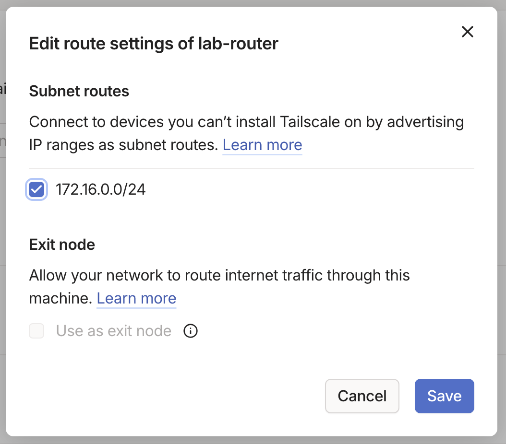
Click save to confirm the settings.
Testing Configuration
Now that everything is in place, your Tailscale-Lab container should be able to ping every IP address except for those within your home network. This ensures your network is safe from anything you decide to run within the lab. You can verify connectivity with a few commands:
ping 172.16.0.1 # Should pass
ping 8.8.8.8 # Should pass
ping google.com # Should pass
ping [HOME_LAN] # Should fail
If these tests work out we should be good to move on.
Next: [[2. Windows Environment]]
Previous: [[1. Hypervisor & Network]]
Now that we have gotten a lot of the initial foundation done we have a place to build our lab environment in. On this page I am going to walk through setting up Windows in our lab environment. I am going to start with a Windows Server 2025 VM, promote it to domain controller, and join a Windows 11 workstation machine to it to simulate a small office environment. Later on I will install network sensors and feed logs up into a SIEM so we can do some real security stuff.
Windows Server
Microsoft developed Windows Server as a solution to manage organization's Active Directories, DNS, DHCP, Group Policy all from a centralized location. You can set servers to act as Domain Controllers, Certificate Authorities and other important network appliances to organize company data and digital environments. In our case we will use it mainly as an Domain Controller so we can have an Active Directory domain in an attempt to simulate a real organization.
Download & Install
As with any virtual machine in Proxmox, setting it up begins with loading the ISO file into the hypervisor so it can be used to install the machine. To download Windows Server 2025 to our proxmox machine I am going to use the following commands:
STORAGEPATH="/var/lib/vz/template/iso"
ISO_URL="https://go.microsoft.com/fwlink/?linkid=2293312&clcid=0x409&culture=en-us&country=us"
wget -c -L -O "${STORAGEPATH}/WinSrv2025_EVAL_en-us.iso" "${ISO_URL}"
To confirm the download was successful I can go to Datacenter > [Node] > local([Node]) . Here we can see it downloaded into our ISO bin.

Confirm you see the ISO here, then click the Create VM button in the top right corner of the Proxmox portal to open the Create VM wizard again. I'm going to give the server install these values:
- VM ID: 902
- Name: WinServer-Lab
- Guest OS Type: Microsoft Windows
- Disk size: 60
- CPU Cores: 4
- Memory: 6144
- Bridge: vmbr1
Once these settings are in place and the VM is built, go ahead and turn it on. You will need to go to Datacenter > [Node] > WinServer-Lab > Console to view the Windows installation wizard.

Make sure to select the Standard Evaluation (Desktop Experience) version of the install. Click Next, Accept the licensing terms, then choose the hard drive it will install on. There should only be the 60 GB VM drive we created earlier.

Once the installer kicks off you can sit back and let Windows do its thing for a few minutes. Eventually you will be prompted to enter an Administrator password. Create a secure one, then log into the machine. With Proxmox you may need to use the NoVNC sidebar to send the CTRL+ALT+DEL button presses to the machine.
Once logged in, open Command Prompt and run a ping to the pfSense router IP to make sure it is connected correctly.
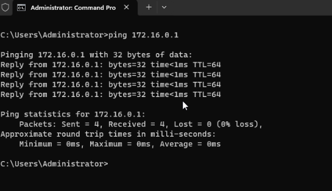
Lab Config
Now that the Windows Server is up and running there are a few settings we need to change. For the server to operate effectively it will need to have a static IP address. We also want RDP and WinRM turned on so that we can connect to the server via remote desktop.
To set the static IP you just need to assign the MAC address of the Windows Server machine to the IP address you want in pfSense. First we need to grab the MAC Address by going to Datacenter > [Node] > WinServer-Lab > Hardware > Network Device and you can copy the address to paste into pfSense.
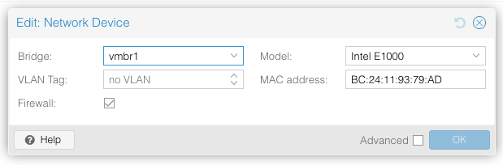
Now go back to the pfSense web portal and select Services > DHCP Server. Make sure the Address Pool Range is set for 172.16.0.100-200 then scroll down to the bottom of the page and click the Add Static Mapping button. Paste the MAC Address into the field where it asks for, then enter the desired IP address.
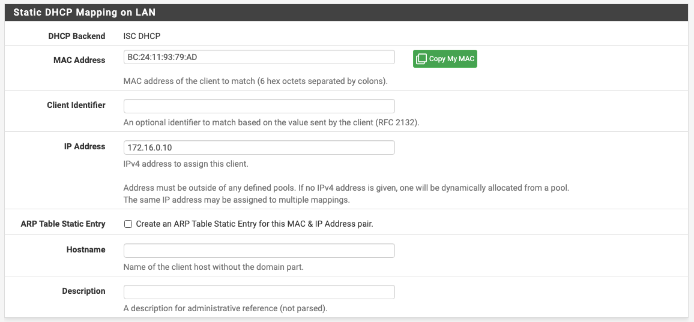
With that in place just scroll down to the bottom of the page and click Save > Apply Changes. This change will not take effect until we reboot our Windows Server VM, but first lets enable RDP and WinRM.
To do that we need to go back into our Windows Server machine and choose Settings > System > Remote Desktop and change the toggle to On. Next go to Server Manager > Local Server and confirm that Remote management and Remote Desktop are both set to Enabled.

Lastly I wanted to change the name of the Windows PC. By clicking on the randomly generated name next to Computer Name you will open a window that allows you to change the name. Change it to WinServer-Lab and allow it restart when prompted.
Now that RDP is enabled I can connect to the machine using a remote desktop tool such as Microsoft's Windows App. You will need to give it the IP address of the machine as the PC name. You can also create a friendly name for it like WinServer-Lab and make it a part of a machine group to keep it organized. I would also go ahead and save the Administrator credentials for easier use.

Save and connect to the machine to verify it works. Now we can copy/paste commands into PowerShell and have a little better quality of life trying to use the server.
Domain Controller
Up next is to promote our Windows Server to a Domain Controller. In a real environment there would likely be several DC's stitched together to provide availability and redundancy for Active Directory. It allows computers to connect to the organizational domain and have access to shared resources and management. It allows users to log in with an organization domain account rather than a local account and can carry it with them from computer to computer.
Before we get started setting that up, I want to make sure the server is fully updated by going to Settings > Windows Update and making sure all updates have been downloaded and installed.
With updates done we can now move on to domain controller promotion. Click Server Manager > Manage > Add Roles and Features to open the wizard. Click the next button a few times until you get to the Server Roles page. Look for the Active Directory Domain Services option and check the box.

A box will pop up asking you to Add Features related to this role. Keep the defaults and click Add Features. Now keep clicking Next until you get to the end of the wizard and click Install. Windows Server will need some time to run as it installs the features and roles we selected.
Once the installation is finished close the box, then go back to the Yellow Flag icon in the top right corner of Server Manager. It will now have an option to "Promote this server to a domain controller".
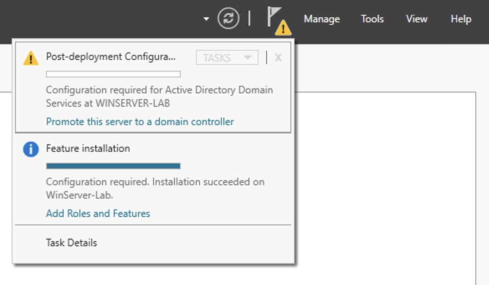
Select this option to open the Domain Services Configuration Wizard. This will let you select options to configure the domain controller. I used the following settings:
- Add a new forest: Checked
- Root Domain Name: busbeecorp.lab
- DNS Delegation: Ignore warning and continue
- NetBIOS name: BUSBEECORP
- Prerequisite Checks: Ignore any soft warnings here about DNS delegation or static IP
Put those settings in place then click Install to send the Windows Server off begin promoting itself to controller of the domain you built. You may notice the machine automatically reboot during this process. You can confirm the promotion took effect by going to Server Manager > Tools > Active Directory Users and Computers. If this page opens without error you should be good.
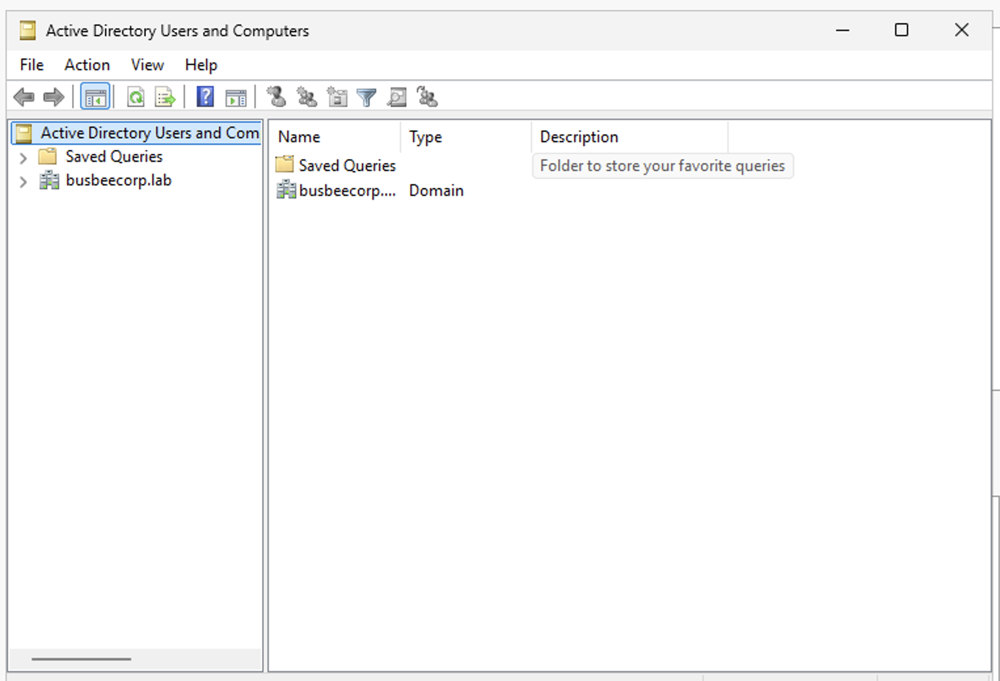
Create Users
While in here we can make some users for our lab environment. Just go to Users > New > User which will pop up a new window to create a user.
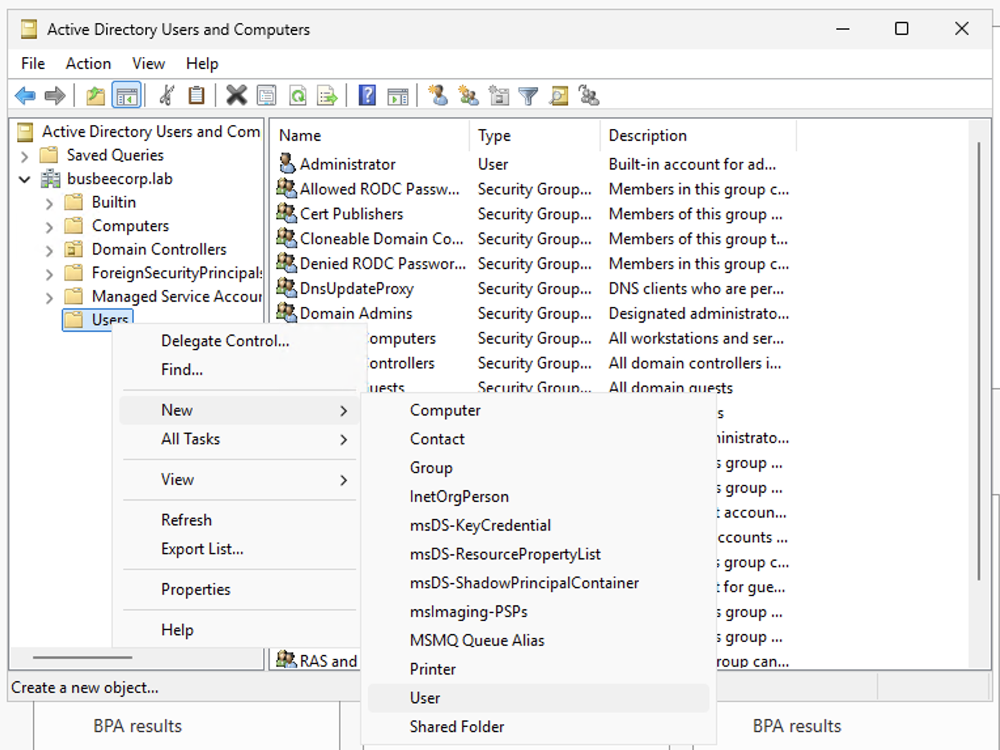
I will name our first user Alice and give her a strong password.

Alice will be the Domain Admin of our lab so I will add her to the Domain Admin and Administrator groups. To add a user to a group, just double-click that user then then go to the Member Of tab. Here you can type the names of the two groups and click Ok > Apply to save the settings. You should see something like this:

Now I will make a second user Bob, who will be our Analyst in the lab. Bob will be a member of the Domain Users and Remote Desktop Users groups. Since the first is a default group I just have to create the Bob user, then add the Remote Desktop Users group to his list of groups.
Installing Sysmon
System Monitor aka Sysmon is a Windows Sysinternals tool used to collect and parse detailed Windows event data. For our lab we will use it to forward event data to our Splunk SIEM. Sysmon also lets you load a config file that can be used to fine-tune the log collection. There is a well known and trusted Sysmon config file created and maintained by SwiftOnSecurity that can be found here.
Sysmon and the SwiftOnSecurity config file and be downloaded and installed using the following elevated (admin) PowerShell that was adapted from ajpc500's GitHub post:
[Net.ServicePointManager]::SecurityProtocol = [Net.SecurityProtocolType]::Tls12
$wc = New-Object System.Net.WebClient
if (!(Test-Path "C:\Tools")) { New-Item -Path "C:\" -Name "Tools" -ItemType "directory" }
# Download Sysmon
$SysmonDirectory = "C:\Tools\Sysmon\"
$SysmonLocalZip = "C:\Tools\Sysmon.zip"
$SysmonURL = "https://download.sysinternals.com/files/Sysmon.zip"
if (!(Test-Path $SysmonLocalZip)) {
$wc.DownloadFile($SysmonURL, $SysmonLocalZip)
Expand-Archive -LiteralPath $SysmonLocalZip -DestinationPath $SysmonDirectory
}
# Download SwiftOnSecurity Config
$SysmonLocalConfig = $SysmonDirectory + "sysmonconfig-export.xml"
$SysmonConfigURL = "https://raw.githubusercontent.com/SwiftOnSecurity/sysmon-config/master/sysmonconfig-export.xml"
if (!(Test-Path $SysmonLocalConfig)) {
$wc.DownloadFile($SysmonConfigURL, $SysmonLocalConfig)
}
# Install Sysmon
$ServiceName = 'Sysmon'
$SysmonService = Get-Service -Name $ServiceName -ErrorAction SilentlyContinue
if ($SysmonService.Status -ne 'Running') {
$SysmonExe = $SysmonDirectory + "Sysmon.exe"
& $SysmonExe -i $SysmonLocalConfig -accepteula
}
Once that's done we can move on to installing the Windows 11 workstation machine.
Atomic Red Team
Atomic Red Team is an open-source framework for simulating MITRE ATT&CK adversary techniques via executable tests, aiding red teaming, detection engineering, and security validation. We can use it to run attacks and test our detection setup thus far. To install Atomic Red Team on the Windows Server run the following commands:
Set-ExecutionPolicy RemoteSigned -Scope LocalMachine
Register-PSRepository -Default
Install-Module -Name invoke-atomicredteam,powershell-yaml -Scope AllUsers
Import-Module invoke-atomicredteam
Verify Installation:
Get-Module -ListAvailable invoke-atomicredteam,powershell-yaml
Windows Workstation
Our lab will need a Windows workstation machine to simulate a real environment. We want it to connect to our domain so we can log in with our domain user accounts. By now we should be familiar with the process. To start off lets download the Windows 11 ISO:
Download & Install
STORAGEPATH="/var/lib/vz/template/iso"
ISO_URL="https://archive.org/download/windows-11-23h2-english-x64v2/Win11_23H2_English_x64v2.iso"
wget -c -L -O "${STORAGEPATH}/Win11_23H2_English_x64.iso" "${ISO_URL}"
Once downloaded, click the Create VM button and add these settings to the wizard:
- VM ID: 903
- Name: WinWS01-Lab
- ISO: Win11_23H2_English_x64.iso
- Guest OS Type: Microsoft Windows
- Disk Size: 64 GB
- CPU Cores: 2
- Memory: 4096 MB
- Bridge: vmbr1
- Start after created: Checked
Now go to Datacenter > [Node] > WinWS01-Lab > Console and walk through the Windows 11 installer. Make sure to select Windows 11 Pro so that the workstation is able to join the domain we created.
Note: Windows 11 Home does not allow domain join and would need to be upgraded or replaced with Pro to support our needs.

The rest of the installer is pretty straight forward. Accept the license, Choose Custom (Install Only), choose the VM hard drive as the install location, and let the installer rip. Eventually you will get to the point where it asks the user to set up their device.
During this setup I named the computer WinWS01-Lab like its called within Proxmox. The installer will next ask if you want to set up Windows for Home or for Work/School. Choose the Work/School option.

It will ask you to login with a Microsoft account. You can instead click Sign-in options > Domain join which will trigger the device to begin local account setup. We can make an account named admin and give it a strong password.
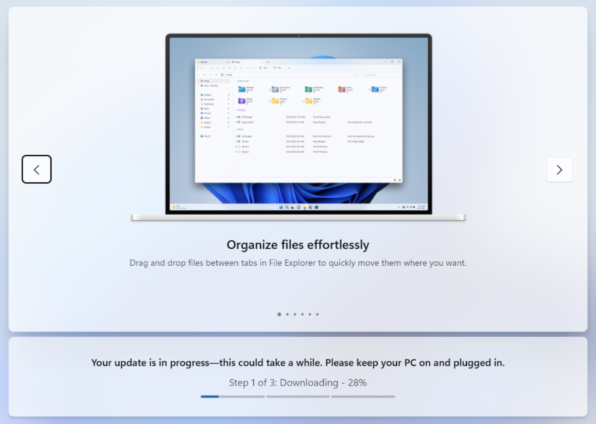
After creating the local account, the Windows installer will run a lengthy process of downloading and installing the latest updates. When this is done you will be able to log into the local account. Let's do that, then edit the Remote Desktop settings, change DNS to the Windows Server, and join the device to the domain.
Join The Domain
Go to Settings > System > Remote Desktop and change the toggle to On. Here we will also need to give Bob rights to use this machine. Click Remote Desktop Users > Add and search for the bob username. You will be prompted to verify this change with a domain admin so you can use Alice's login to make this work.
Next go to Settings > Network & internet > Ethernet > DNS Server assignment > Edit and change the IPv4 DNS Server address to 172.16.0.10.
Once that's done, go to Accounts > Access work or school > Connect > Join this device to a local Active Directory domain and type in the name of the domain we set in the previous step.

Since Alice is our only domain admin, she will have to be the one to approve this device to join the domain.
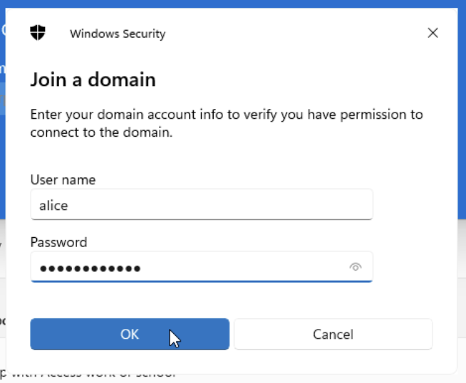
If you get a step to add a user, skip it and choose not to restart the computer.
One last step before we can connect to RDP via our lab user Bob, is to give the workstation a static IP. Similar to before we need to go over to the WinWS01-Lab network settings to grab the MAC address then paste it into Services > DHCP Server > Add Static Mapping and give it the IP address 172.16.0.11.
Connect via RDP
Now restart the Windows workstation machine and connect to it from the Windows App. You will need to create a new PC using the new static IP address.

Create a new user with Bob's credentials since this will be his machine.
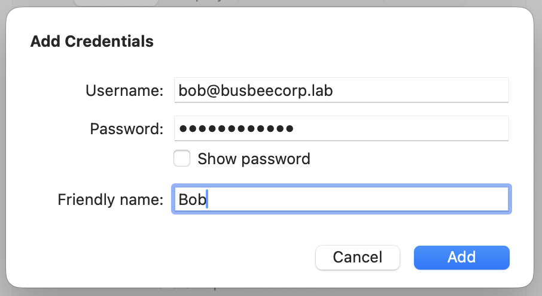
Now you should be able to connect to the WinWS01-Lab machine through RDP with Bob's login. If you have any errors connecting, go back and make sure you set everything correctly.
Installing Sysmon (again)
We will want Sysmon installed on all Windows devices in our lab for monitoring purposes. Luckily the install instructions are exactly the same for Windows 11 as it is Windows Server. Just make sure to open a Windows PowerShell terminal as administrator then run the same commands as above.
Atomic Red Team (again)
We also want to install Atomic Red Team on our workstation machine. To do so you can run the exact same commands again but from an Administrator PowerShell.
Once you get to this step you should be basically done setting up the windows environment.Up next we need to build a Security Onion VM to act as a network monitor.
Next: [[3. Security Onion]]
Previous: [[2. Windows Environment]]
Security Onion is a Swiss Army Knife of security tools that has several different systems built in such as Zeek, Suricata, osquery and can be used to monitor networks and capture network packets. For this lab we will use it mainly as a network monitor that will forward Zeek logs to Splunk for log analysis.
Download ISO
Installing Security Onion is similar to the other VMs so far. First we need to download the ISO to Proxmox, then build out a VM for it in the Wizard. Here's a few commands you can use to download Security Onion from the Proxmox terminal:
STORAGEPATH="/var/lib/vz/template/iso"
VERSION="2.4.180-20250916"
ISO="securityonion-${VERSION}.iso"
ISO_URL="https://download.securityonion.net/file/securityonion/${ISO}"
wget -c -L -O "${STORAGEPATH}/${ISO}" "${ISO_URL}"
The ISO file is rather large (14GB) so you may want to go take a break while waiting for this to finish. Once its done you can click the Create VM in the top right corner of Proxmox to start the wizard. I used the following config for Security Onion:
- VM ID: 904
- Name: SecOnion-Lab
- Disk size: 250GB
- CPU Cores: 4
- Memory: 24GB
- Bridge: vmbr1
SPAN port
Before turning on the machine and installing Security Onion we will need to make some changes to the network settings. Security Onion has the ability to listen to the network on a second port on the network called a SPAN port that allows it to hear all traffic flowing through the network, not just those intended for the SO machine or broadcasts to all machines. This means Security Onion can hear two other machines on the network talking to each other, which would be impossible only using the one standard network connection.
We will need to make some changes within Proxmox to allow for this. First we need to create a second NIC on the Security Onion hardware settings by going to Datacenter > [Node] > SecOnion-Lab > Hardware > Add > Network Device > OVS Bridge. Use the following settings:
- Model: VirtIO (paravirtualized)
- Bridge: vmbr1
- Firewall: Unchecked
This sets the SPAN port to listen on vmbr1. Now we just need to get Proxmox to mirror all traffic on vmbr1 to this port. This can be done by going to the Proxmox terminal at Datacenter > [Node] > Shell and running this command:
ovs-vsctl clear bridge vmbr1 mirrors
ovs-vsctl -- --id=@p get port tap904i1 -- --id=@m create mirror name=span1 select-all=true output-port=@p -- set bridge vmbr1 mirrors=@m
The command above does the following:
- Clears out any previous mirrors on vmbr1
- Creates a new mirror called span1
- Sets it to mirror vmbr1
- Connects the mirror to output to the net1 NIC on VM ID 904.
For better understanding of this command I found this blog post incredibly helpful: https://vext.info/2018/09/03/cheat-sheet-port-mirroring-ids-data-into-a-proxmox-vm.html
Unfortunately, Proxmox does not save this mirror setting in the event of a power off or reboot. This means we will either need to run this command every time Proxmox restarts or create a script to automate that action. The blog post above provides a solution to this which I will show below as well.
#!/bin/bash
# seconiontap.sh
SECONIONLOG=/root/seconiontap.log
date >> $SECONIONLOG
echo "####################" >> $SECONIONLOG
echo "Clearing any existing mirror..." >> $SECONIONLOG
ovs-vsctl clear bridge vmbr1 mirrors
echo "Creating mirror on vmbr1 for Security Onion..." >> $SECONIONLOG
ovs-vsctl -- --id=@p get port tap904i1 -- --id=@m create mirror name=span1 select-all=true output-port=@p -- set bridge vmbr1 mirrors=@m >> $SECONIONLOG
echo "Showing existing mirrors..." >> $SECONIONLOG
ovs-vsctl list Mirror >> $SECONIONLOG
echo "####################" >> $SECONIONLOG
The script sets the mirror but more importantly provides logging functionality so we can look into any issues that may arise over time. I created this script in the /root/ folder and called it seconiontap.sh.
I then ran crontab -e to add this line to the Crontab file:
@reboot sleep 120 && /root/seconiontap.sh
This will tell Proxmox to run the script 120 seconds after rebooting. You may have to fine tune the number of seconds to make sure the Security Onion VM is up and running first before the script runs.
Set Static Mapping
Now find the MAC address of the Security Onion VM by going to Datacenter > [Node] > Hardware > Network Device (net0) which should be the NIC of the vmbr1 network interface. Now lets go to the pfSense console at https://172.16.0.1 and log in with your admin account.
Next go to Services > DHCP Server > Add Static Mappings and add a new entry for Security Onion. Paste in the MAC address for the Security Onion VM vmbr1 NIC and set it to the IP address 172.16.0.12. Now click Save > Apply Changes to save the mapping.
Install VM
Now we can turn on the Security Onion VM and walk through setup. After clicking Start go to the console page for the VM where you should be greeted with the initial install page for Security Onion. You can select the first option which will give us a standard Security Onion install.

You will then be asked whether it's okay to delete the contents of the VM hard drive to install Security Onion. Since this is a fresh virtual HD we have nothing to worry about.

Type yes to continue. You will then be asked to create an administrative user for this install. I chose the name admin and gave it a strong password. Next it will kick off the installer. You will need to let this run for a while. Eventually you will see a screen asking you to press Enter to Reboot. Do that and wait for it to turn back on.
After the reboot finishes Security Onion will ask you to login with the account created during setup. Give it those credentials then click Yes on the screen asking you to continue.

Next choose Install from the menu.
On the next screen choose Standalone.

Type AGREE to accept the license terms then select Standard as the network type.

Give it the hostname seconion-lab to match the Proxmox naming.

Note: Uppercase characters can cause conflicts in some instances so its best to make sure your hostname uses all lowercase.
Next you will be asked to select the NIC to be used for management. This is referring to the standard network connection that will be provided by the vmbr1 interface. Make sure to select the correct MAC address that corresponds to this NIC.
Note: You may have to look at the hardware settings for the Security Onion VM to tell these apart.
Next it will ask whether to use a Static IP or DHCP. I will set it to DHCP here so that our pfSense static mapping can take over. On the next page you will be warned that a DHCP address can cause problems but don't worry about that if you have the static mapping in pfSense set up.
On the next two pages you will be asked whether to connect to the internet directly or via proxy and whether to use the default docker IP range. Choose direct and yes respectively.
On the next page you will be asked to select the Monitor Interface. We want to make sure the MAC address of the vmbr2 SPAN port we created is selected. You can tap the Spacebar with the selection highlighted to add an asterisk to the selection. Then click Ok to move on to the next page.
The next page will ask to enter an email address for an admin user. Provide this and create a strong password to go with it.

The next page will ask which method you would like to use to access the Security Onion web interface. Select IP here for simplicity. If we decide to implement DNS later we can come back to this. On the next page choose Yes to allow access to the web interface.
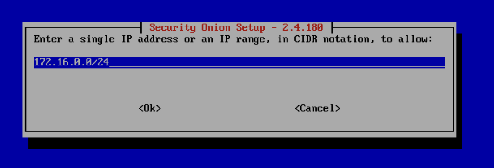
You will then be asked to provide an IP or network range that is allowed to view the web interface. Here enter 172.16.0.0/24 so it is visible from our network. Later we may want to consider restricting this down somewhat.
On the last page you will be given a list of your chosen configuration settings. Click Yes to approve these settings and let Security Onion go off and begin installing its necessary items.
When the install finishes you should be spit back out into the terminal console. You can type sudo so-status to see the current status of the Security Onion services.

You should also be able to visit https://172.16.0.12 in your browser to see the Security Onion web console. You will need to login using the email address and password supplied during setup.

Once logged in you should see the dashboard with several views and tools on the left sidebar. Now there are just a few bits of housekeeping left to do to get us up and running.
Post-Install Config
Go back to your Security Onion terminal in Proxmox and run the following commands to switch to the root user and update the SO packages.
sudo su -
soup
Note: You will either need to reboot because updates were found or switch back to your user account if reboot is unnecessary by using
su <username>
Next we need to run a series of commands to enable promiscuous mode on the the SPAN interface in a way that is persistent. First we need to create a new service by first switching to root sudo su - and then running the following command:
echo "[Unit]
Description=Enable promisc on SPAN iface
After=network.target
[Service]
Type=oneshot
ExecStart=/sbin/ip link set ens19 promisc on
RemainAfterExit=true
[Install]
WantedBy=multi-user.target" > /etc/systemd/system/promisc.service
Next run these commands to enable the service and reboot Security Onion.
systemctl daemon-reload && systemctl enable promisc.service
reboot
After it reboots check that ens19 is running in promiscuous mode by running:
ip link show ens19
You should see something that looks like this:
If you see this it should mean everything was installed correctly.
Testing Mirrored Traffic
There are two ways you can check whether Proxmox is correctly mirroring traffic to the SPAN port, by running tcpdump and viewing the Kibana dashboard on Security Onion's web portal.
For tcpdump, go to a Proxmox shell and run:
tcpdump -i tap904i1 -n
You should see a lot of packets begin to flow in from various source and destination IP addresses.

You can also go to your Security Onion web portal at https://172.16.0.12 and choose Kibana on the left side to get to the Kibana data visualization page.
The Kibana dashboard will show you a lot of information about what it sees. To drill deeper into the network data you can click Network in the Event Category section.
Here you can see a breakdown of network traffic by a few different dimensions.

Seeing all of this tells me that our Security Onion install is a success and we can move on to setting up Splunk for log management and visibility.
Next: [[4. Splunk]]
Previous: [[3. Security Onion]]
Splunk is a powerful tool that can be used to collect, analyze, and visualize log data from virtually all devices on a network. It helps organizations monitor and investigate security issues that arise and help track events as they affect multiple devices.
Splunk has options to deploy in the cloud or on premises. For our lab I am going to install it on-prem as another VM in Proxmox. From there we will just need to install the Splunk Universal Forwarder on all devices so that all events across the lab network can be viewed together in one place.
(Optional) Developer License
Splunk has a very limited free plan that lets users ingest up to 500MB of log data per day as well as limits that lock you down to one single Splunk instance. This should be plenty for our lab, but if you can also sign up for a Splunk Developer License to get your ingest limit increased to 10GB per day. This will give a bit more overhead so you can get a bit more done in your labs if you want.
Go to https://dev.splunk.com/enterprise/dev_license/ for instructions on how to sign up. You will need to create a Splunk account on the Splunk Developer page. The sign up page will ask you several questions about what you plan to do with the platform. I just said I was a student and hobbyist developer and that I just want to play around with the tools.
Download & Install VM
First we need to download and install Ubuntu Server as a base for Splunk to sit on. To download the Ubuntu Server 24.04 ISO to Proxmox run the following in a Proxmox shell:
STORAGEPATH="/var/lib/vz/template/iso"
VERSION="24.04.3"
ISO="ubuntu-${VERSION}-live-server-amd64.iso"
ISO_URL="https://releases.ubuntu.com/noble/${ISO}"
wget ${ISO_URL} -O ${STORAGEPATH}/${ISO}
Now Click Create VM in the top right to create a new Ubuntu Server VM with the following settings:
- VM ID: 905
- Name: Splunk-Lab
- Start at boot: Checked
- Bus/Device: VirtIO Block
- Disk size: 200 GB
- CPU Cores: 8
- CPU Type: host
- Memory: 16384
- Bridge: vmbr1
Before powering on the VM go into pfSense and give it a static IP mapping. I will chose 172.16.0.13 for Splunk. Remember this can be found by going to pfSense console at https://172.16.0.1 and selecting Services > DHCP Server > Add Static Mapping and connect the IP to the MAC address of the Splunk VM. When this is done click Save > Apply Changes to save the mapping.
Now just power it on and run through the Ubuntu Server setup. Here's a list of the settings I selected for the install:
- Type of Installation: Ubuntu Server
- Search for Third Party Drivers: Checked
- Use Entire Disk: Checked
- Your name: splunk
- Server name: splunk
- Pick a username: splunk
- Install OpenSSH Server: Checked
After finishing the install wizard it will ask you to confirm the settings and reboot the machine. Wait for everything to finish, then reboot.
Installing Splunk
Once the Splunk VM comes back online you will be asked to login with the user created during setup. After logging in you will need to run a few commands to get the VM updated and make sure the qemu guest agent is installed.
sudo apt update && sudo apt upgrade -y
sudo apt install qemu-guest-agent -y && sudo systemctl enable qemu-guest-agent
sudo reboot
Wait for the VM to reboot then run the following commands to download, install, and start Splunk.
wget -O splunk.deb 'https://download.splunk.com/products/splunk/releases/10.0.1/linux/splunk-10.0.1-c486717c322b-linux-amd64.deb'
sudo dpkg -i splunk.deb
sudo /opt/splunk/bin/splunk start --accept-license
sudo /opt/splunk/bin/splunk enable boot-start
During setup you will be asked to create a new Splunk user. I chose the username admin and a strong password.
Once the install is complete Splunk can be accessed by going to its URL at https://172.16.0.13:8000. You will need to then login using the username and password chosen during the Splunk install setup. You should then be taken the the default homepage for Splunk.

I also added the following lines to allow Splunk through the UFW firewall:
sudo ufw allow 8000/tcp
sudo ufw allow 8089/tcp
sudo ufw enable
With this done we now just need to install the Splunk Universal Forwarder on all of our lab devices:
- pfSense
- Tailscale
- Windows Server
- Windows Workstation
- Security Onion
Once they are in place they will push log data from each device up into Splunk for us to analyze in the lab. Without this step there would still be no data to look at.
Creating Network Index
Splunk > Settings > Indexes > New Index
- Name: network
Click Save
Splunk provides a convenient way to send log data from endpoints to the Splunk receiver by way of the Splunk Universal Forwarder. It just has to be downloaded on each device and pointed to the Splunk server. Alternately, there are manual ways to export logs to Splunk, and for some of our VMs it will be the preferred way to do it.
pfSense
Splunk will need an extra app installed to correctly parse data from pfSense. To add it we will need to log into our Splunk device, either on Proxmox shell or ssh. Run the following commands inside Splunk's terminal.
sudo su -
cd /opt/splunk/etc/apps
git clone https://github.com/barakat-abweh/TA-pfsense.git
/opt/splunk/bin/splunk restart
While we're here let's also add a firewall rule for the 5514 port we will use:
sudo ufw allow 5514/udp
Now if you go to your Splunk Web Console in Splunk > Apps > Manage Apps you should see TA-pfsense on the list. You may have to move to the second page to see it.
Next, still in the Splunk Web Console, go to Splunk > Settings > Data Inputs > UDP > Add new and use the following inputs in the wizard:
- Port: 5514
- Source type: pfsense
- Index: network
- Host: DNS
Navigate to the pfSense web portal at https://172.16.0.1 and go to Status > System Logs > Settings. Check the box for Send log messages to remote syslog server which will open up a settings box below where you will need to enter the following:
- Source Address: Any
- Remote Log Servers: 172.16.0.13:5514
- Remote Syslog Contents: Everything
With these set just hit Save and that should be all you need to do.
Tailscale
Next we will want to log into a shell on our Tailscale-Lab machine and run the following commands to download and install the Splunk Universal Forwarder:
apt update && apt install -y wget
wget -O splunkforwarder-10.0.1-c486717c322b-linux-amd64.deb "https://download.splunk.com/products/universalforwarder/releases/10.0.1/linux/splunkforwarder-10.0.1-c486717c322b-linux-amd64.deb"
dpkg -i splunkforwarder-10.0.1-c486717c322b-linux-amd64.deb
chown -R splunkfwd:splunkfwd /opt/splunkforwarder
Start Forwarder:
/opt/splunkforwarder/bin/splunk start --accept-license --answer-yes --no-prompt --seed-passwd CHANGEME
Note: In the command above you will need to feed a strong password into the forwarder. This can be used at the forwarder web instance.
Next you will need to edit the config file so Splunk can forward to the right IP address with this command:
echo "[tcpout]
defaultGroup = splunkenterprise
[tcpout:splunkenterprise]
server = 172.16.0.13:9997" >> /opt/splunkforwarder/etc/system/local/outputs.conf
You will also need to edit Splunk Forwarder to watch /var/log and report it:
cat >/opt/splunkforwarder/etc/system/local/inputs.conf <<'EOF'
[monitor:///var/log]
recursive = true
sourcetype = syslog
index = main
EOF
usermod -aG adm splunkfwd
systemctl restart splunkforwarder || /opt/splunkforwarder/bin/splunk restart
apt update && apt install -y rsyslog
systemctl enable --now rsyslog
logger -p user.notice "UF rsyslog test $(date)"
sleep 2
tail -n3 /var/log/syslog
Lastly, restart the forwarder:
/opt/splunkforwarder/bin/splunk restart
Once all that is in place the Tailscale VM should be good to go.
Windows
The instructions for installing the forwarder for Windows 11 and Server are exactly the same so I will condense the info to just one section here.
Note: You will want to make sure you installed Sysmon back in the Windows Environment setup page. Sysmon logs will have much of the info we will want to collect from the Windows machines beyond the network logs.
Use the following script in an elevated (admin) PowerShell instance to download, install, and start the Splunk Universal Forwarder:
$URL = 'https://download.splunk.com/products/universalforwarder/releases/10.0.1/windows/splunkforwarder-10.0.1-c486717c322b-windows-x64.msi'
$MSI = 'splunkforwarder-10.0.1-c486717c322b-windows-x64.msi'
$INDEXER = '172.16.0.13:9997'
$UF_ADMIN_PASS = 'CHANGEME'
Invoke-WebRequest -Uri $URL -OutFile $MSI
$InstallArgs = @(
'/i', $MSI,
'AGREETOLICENSE=Yes',
'SPLUNKUSERNAME=admin',
"SPLUNKPASSWORD=$UF_ADMIN_PASS",
"RECEIVING_INDEXER=$INDEXER",
'WINEVENTLOG_SEC_ENABLE=1',
'WINEVENTLOG_SYS_ENABLE=1',
'/qn','/norestart'
)
Start-Process msiexec.exe -Verb RunAs -ArgumentList $InstallArgs -Wait -PassThru
Start-Sleep -Seconds 2
Get-Service SplunkForwarder -ErrorAction SilentlyContinue | Start-Service
Get-Service SplunkForwarder
Note that the commands have a hardcoded forwarder password and IP address for the Splunk receiver
Command Line Arguments
use std:: env; fn main() { let args: Vec<String> = env::args().collect(); let config = read_args(&args); } struct Config { first: String, second: String, } fn read_args(args: &[String]) -> Config { let first = &args[1].clone(); let second = &args[2].clone(); Config { first, second } }
Read From File
#![allow(unused)] fn main() { use std:fs; let contents = fs::read_to_string(file_path) .expect("Should have been able to read the file"); println!("With text:\n{contents}"); }